ERC en población afrodescendiente: análisis preliminar#
Librerías:#
import pandas as pd
import seaborn as sns
import matplotlib.pyplot as plt
import numpy as np
from IPython.display import display, HTML
import math
from scipy.stats import spearmanr, pearsonr
from scipy.stats import chi2_contingency
from scipy.stats import shapiro
from sklearn.experimental import enable_iterative_imputer
from sklearn.impute import IterativeImputer
from scipy.stats import ks_2samp
from sklearn.ensemble import RandomForestRegressor
import unicodedata
Funciones:#
def resumen_var_cat(df):
conteo = df.value_counts(dropna=False)
porcentaje = df.value_counts(normalize=True, dropna=False) * 100
resumen = pd.DataFrame({
'Categorías': conteo.index,
'Conteo': conteo.values,
'Porcentaje': porcentaje.values.round(2)
})
resumen = resumen.head(10)
styled = resumen.style \
.format({'porcentaje': '{:.2f}%'})
display(styled)
def prueba_kolmogrov(df_original,df_imputed,variable1, variable2):
stat, p = ks_2samp(df_original[variable1].dropna(), df_imputed[variable2].dropna())
print(f"KS statistic: {stat:.3f}, p-value: {p:.3f}")
if(p > 0.05):
print("No hay evidencia estadísticamente significativa que evidencia que las distribuciones difieran")
else:
print("La distribución cambió significativamente")
def distribucion_cruzada (df_original, df_imputed, variable):
sns.kdeplot(df_original[variable].dropna(), label='Original')
sns.kdeplot(df_imputed[variable], label='Imputado')
plt.legend()
plt.show()
def analizar_misma_variable(df1, df2, columna, color1="#4682B4", color2="#FF6347"):
f, ((ax_box1, ax_hist1), (ax_box2, ax_hist2)) = plt.subplots(2, 2, sharex='col', figsize=(12, 10))
sns.boxplot(x=df1[columna], ax=ax_box1, color=color1, fliersize=5)
ax_box1.set(xlabel='')
ax_box1.set_title(f'Distribución de la Variable: {columna} en df1', fontsize=14)
sns.histplot(df1[columna], ax=ax_hist1, kde=True, color=color1, bins=30)
ax_hist1.set_xlabel(f'Valores de {columna}', fontsize=12)
ax_hist1.set_ylabel('Frecuencia', fontsize=12)
sns.boxplot(x=df2[columna], ax=ax_box2, color=color2, fliersize=5)
ax_box2.set(xlabel='')
ax_box2.set_title(f'Distribución de la Variable: {columna} en df2', fontsize=14)
sns.histplot(df2[columna], ax=ax_hist2, kde=True, color=color2, bins=30)
ax_hist2.set_xlabel(f'Valores de {columna}', fontsize=12)
ax_hist2.set_ylabel('Frecuencia', fontsize=12)
plt.tight_layout()
plt.show()
def prueba_normalidad_shap (df, variable):
stat, p = shapiro(df[variable].dropna())
print('Estadístico=%.3f, p=%.3f' % (stat, p))
if p > 0.05:
print('No se rechaza H0 → parece normal')
else:
print('Se rechaza H0 → no es normal')
def cramers_v(tabla):
chi2 = chi2_contingency(tabla)[0]
n = tabla.sum().sum()
r, k = tabla.shape
return np.sqrt(chi2 / (n * (min(r - 1, k - 1))))
def matriz_asociacion_categoricas(df, variables, figsize=(12,10), annot=True):
matriz_v = pd.DataFrame(index=variables, columns=variables, dtype=float)
matriz_p = pd.DataFrame(index=variables, columns=variables, dtype=float)
resultados = []
for i, var1 in enumerate(variables):
for j, var2 in enumerate(variables):
if var1 == var2:
matriz_v.loc[var1, var2] = 1.0
matriz_p.loc[var1, var2] = np.nan
else:
tabla = pd.crosstab(df[var1], df[var2])
if tabla.shape[0] < 2 or tabla.shape[1] < 2:
matriz_v.loc[var1, var2] = np.nan
matriz_p.loc[var1, var2] = np.nan
else:
chi2, p, dof, expected = chi2_contingency(tabla)
v = cramers_v(tabla)
matriz_v.loc[var1, var2] = v
matriz_p.loc[var1, var2] = p
if i < j:
resultados.append([var1, var2, v, p])
plt.figure(figsize=figsize)
sns.heatmap(
matriz_v.astype(float),
annot=annot,
cmap="Blues",
fmt=".2f",
linewidths=0.5,
square=True,
cbar_kws={"shrink": 0.8}
)
plt.title("Matriz de Asociación entre Variables Categóricas (V de Cramér)", fontsize=14)
plt.xticks(rotation=45, ha="right")
plt.yticks(rotation=0)
plt.tight_layout()
plt.show()
tabla_asociaciones = pd.DataFrame(resultados, columns=["Variable_1", "Variable_2", "V_Cramer", "p_valor"])
tabla_asociaciones = TFG_asociaciones.sort_values(by="V_Cramer", ascending=False).reset_index(drop=True)
return matriz_v, matriz_p, tabla_asociaciones
import pandas as pd
from scipy.stats import chi2_contingency
def prueba_chi_cuadrado(df, var1, var2):
tabla_contingencia = pd.crosstab(df[var1], df[var2])
chi2, p, dof, expected = chi2_contingency(tabla_contingencia)
tabla_porcentajes = pd.crosstab(df[var1], df[var2], normalize='columns') * 100
tabla_formateada = tabla_contingencia.copy().astype(str)
for col in tabla_contingencia.columns:
tabla_formateada[col] = (
tabla_contingencia[col].astype(str) +
" (" + tabla_porcentajes[col].map("{:.1f}".format) + "%)"
)
print(f"=== PRUEBA CHI-CUADRADO: {var1} vs {var2} ===")
print(f"Estadístico Chi2: {chi2:.4f}")
print(f"p-valor: {p:.4e}")
print(f"Grados de libertad: {dof}")
print("-" * 40)
if p < 0.05:
print("Existe una RELACIÓN significativa entre las variables (p < 0.05).")
else:
print("NO hay evidencia de relación. Las variables son independientes.")
print("\n--- Tabla de Frecuencias Observadas (Porcentaje por Columna) ---")
display(tabla_formateada)
return p
def grafico_dispersion(df, x, y, metodo_corr="spearman", figsize=(8,6)):
data = df[[x, y]].dropna()
if metodo_corr.lower() == "spearman":
corr, p_value = spearmanr(data[x], data[y])
elif metodo_corr.lower() == "pearson":
corr, p_value = pearsonr(data[x], data[y])
else:
raise ValueError("metodo_corr debe ser 'spearman' o 'pearson'")
plt.figure(figsize=figsize)
sns.regplot(
data=data,
x=x,
y=y,
scatter_kws={"alpha": 0.7},
line_kws={"linewidth": 2},
color="#5B8DB8"
)
plt.title(f"Gráfico de Dispersión: {x} vs {y}", fontsize=14)
plt.xlabel(x, fontsize=12)
plt.ylabel(y, fontsize=12)
plt.grid(alpha=0.2)
plt.text(
0.05, 0.95,
f"{metodo_corr.capitalize()} = {corr:.2f}\np = {p_value:.4f}",
transform=plt.gca().transAxes,
fontsize=11,
verticalalignment='top',
bbox=dict(boxstyle="round,pad=0.3", edgecolor="gray", facecolor="white")
)
plt.tight_layout()
plt.show()
return corr, p_value
import pandas as pd
def tabla_frecuencias_comparada(df1, col1, df2, col2, nombre_df1='Categorías originales', nombre_df2='Categorías agrupadas'):
def obtener_estadisticos(df, columna, etiqueta):
abs_freq = df[columna].value_counts(dropna=False)
rel_freq = (df[columna].value_counts(normalize=True, dropna=False) * 100).round(2)
temp_df = pd.DataFrame({
'Categoría': abs_freq.index,
'Frec. Absoluta': abs_freq.values,
'Frec. Relativa (%)': rel_freq.values
})
temp_df['Variable / Origen'] = f"{etiqueta} ({columna})"
return temp_df
stats1 = obtener_estadisticos(df1, col1, nombre_df1)
stats2 = obtener_estadisticos(df2, col2, nombre_df2)
resultado = pd.concat([stats1, stats2], axis=0)
resultado = resultado.set_index(['Variable / Origen', 'Categoría'])
return resultado
def resumen_categorica(df, columna, incluir_na=False, ordenar_por_frecuencia=True, figsize=(8,5)):
freq_abs = df[columna].value_counts(dropna=not incluir_na)
freq_rel = df[columna].value_counts(normalize=True, dropna=not incluir_na) * 100
tabla_freq = pd.DataFrame({
columna: freq_abs.index,
"Frecuencia Absoluta": freq_abs.values,
"Frecuencia Relativa (%)": freq_rel.values.round(2)
})
if ordenar_por_frecuencia:
tabla_freq = tabla_freq.sort_values(by="Frecuencia Absoluta", ascending=False).reset_index(drop=True)
colores = sns.color_palette("Blues", n_colors=len(tabla_freq) + 2)[2:]
plt.figure(figsize=figsize)
ax = sns.barplot(
data=tabla_freq,
x=columna,
y="Frecuencia Absoluta",
palette=colores
)
plt.title(f"Distribución de la Variable: {columna}", fontsize=14)
plt.xlabel(columna, fontsize=12)
plt.ylabel("Frecuencia Absoluta", fontsize=12)
plt.xticks(rotation=45)
for i, row in tabla_freq.iterrows():
ax.text(
i,
row["Frecuencia Absoluta"] + 0.5,
f'{row["Frecuencia Relativa (%)"]:.1f}%',
ha='center',
va='bottom',
fontsize=10
)
plt.tight_layout()
plt.show()
return tabla_freq
def analizar_distribucion(df, columna, color="#4682B4"):
f, (ax_box, ax_hist) = plt.subplots(2, sharex=True,
gridspec_kw={"height_ratios": (.15, .85)},
figsize=(8, 6))
sns.boxplot(x=df[columna], ax=ax_box, color=color, fliersize=5)
ax_box.set(xlabel='')
ax_box.set_title(f'Distribución de la Variable: {columna}', fontsize=14)
sns.histplot(df[columna], ax=ax_hist, kde=True, color=color, bins=30)
ax_hist.set_xlabel(f'Valores de {columna}', fontsize=12)
ax_hist.set_ylabel('Frecuencia', fontsize=12)
plt.tight_layout()
plt.show()
def Resumen_Faltantes(df):
faltantes = df.isnull().sum()
porcentaje = (faltantes / len(df)) * 100
tabla_faltantes = pd.DataFrame({
'Valores faltantes': faltantes,
'Porcentaje (%)': porcentaje
})
tabla_faltantes = tabla_faltantes[tabla_faltantes['Valores faltantes'] > 0]
tabla_faltantes.sort_values('Porcentaje (%)', ascending=False)
return tabla_faltantes
def comparar_categoricas(df, col1, col2, incluir_na=False, ordenar_por_frecuencia=True, figsize=(12, 6)):
def tabla_frecuencia(df, columna):
counts = df[columna].value_counts(dropna=not incluir_na)
total = len(df[columna]) if incluir_na else df[columna].count()
tabla = pd.DataFrame({
columna: counts.index,
"Frecuencia Absoluta": counts.values,
"Frecuencia Relativa (%)": (counts.values / total * 100).round(2)
})
if ordenar_por_frecuencia:
tabla = tabla.sort_values(by="Frecuencia Absoluta", ascending=False).reset_index(drop=True)
return tabla
tabla1 = tabla_frecuencia(df, col1)
tabla2 = tabla_frecuencia(df, col2)
fig, axes = plt.subplots(1, 2, figsize=figsize)
sns.barplot(data=tabla1, x=col1, y="Frecuencia Absoluta", color="#5B8DB8", ax=axes[0])
axes[0].set_title(f"Distribución de {col1}")
axes[0].tick_params(axis='x', rotation=45)
for i, row in tabla1.iterrows():
axes[0].text(i, row["Frecuencia Absoluta"] + 0.5, f'{row["Frecuencia Relativa (%)"]}%',
ha='center', va='bottom', fontsize=9)
sns.barplot(data=tabla2, x=col2, y="Frecuencia Absoluta", color="#89A8C9", ax=axes[1])
axes[1].set_title(f"Distribución de {col2}")
axes[1].tick_params(axis='x', rotation=45)
for i, row in tabla2.iterrows():
axes[1].text(i, row["Frecuencia Absoluta"] + 0.5, f'{row["Frecuencia Relativa (%)"]}%',
ha='center', va='bottom', fontsize=9)
plt.tight_layout()
plt.show()
html_t1 = tabla1.to_html(index=False)
html_t2 = tabla2.to_html(index=False)
display(HTML(f"""
<div style="display: flex; justify-content: flex-start; gap: 40px; padding-left: 5%; width: 100%;">
<div style="min-width: 300px; max-width: 45%;">{html_t1}</div>
<div style="min-width: 300px; max-width: 45%;">{html_t2}</div>
</div>
<style>
.dataframe {{
border-collapse: collapse;
border: none;
width: 100%;
}}
.dataframe th {{
background-color: #f2f2f2;
text-align: left;
padding: 8px;
}}
.dataframe td {{
padding: 8px;
border-bottom: 1px solid #ddd;
}}
</style>
"""))
def matriz_barras_categoricas(df, columnas, incluir_na=False, ncols=3, figsize_por_grafico=(6, 4)):
tablas_frecuencia = {}
n = len(columnas)
nrows = math.ceil(n / ncols)
fig, axes = plt.subplots(
nrows=nrows,
ncols=ncols,
figsize=(figsize_por_grafico[0] * ncols, figsize_por_grafico[1] * nrows)
)
axes = axes.flatten() if n > 1 else [axes]
for i, col in enumerate(columnas):
ax = axes[i]
freq_abs = df[col].value_counts(dropna=not incluir_na)
freq_rel = df[col].value_counts(normalize=True, dropna=not incluir_na) * 100
tabla = pd.DataFrame({
col: freq_abs.index.astype(str),
"Frecuencia Absoluta": freq_abs.values,
"Frecuencia Relativa (%)": freq_rel.values.round(2)
})
tablas_frecuencia[col] = tabla
colores = sns.color_palette("Blues", n_colors=len(tabla) + 2)[2:]
sns.barplot(
data=tabla,
x=col,
y="Frecuencia Absoluta",
palette=colores,
ax=ax
)
ax.set_title(col, fontsize=12)
ax.set_xlabel("")
ax.set_ylabel("Frecuencia")
ax.tick_params(axis='x', rotation=45)
for j, row in tabla.iterrows():
ax.text(
j,
row["Frecuencia Absoluta"] + max(tabla["Frecuencia Absoluta"]) * 0.01,
f'{row["Frecuencia Relativa (%)"]:.1f}%',
ha='center',
va='bottom',
fontsize=9
)
for j in range(i + 1, len(axes)):
fig.delaxes(axes[j])
plt.tight_layout()
plt.show()
return tablas_frecuencia
def imputacion_por_mediana(df, columna):
mediana = df[columna].median()
df[columna].fillna(mediana, inplace=True)
return df
def analizar_comparativa(df1, df2, col1, col2, color1="#4682B4", color2="#FF6347"):
f, axes = plt.subplots(2, 2, figsize=(12, 10))
sns.boxplot(x=df1[col1], ax=axes[0, 0], color=color1, fliersize=5)
axes[0, 0].set_title(f'Boxplot: {col1} (DF1)', fontsize=12)
sns.histplot(df1[col1], ax=axes[0, 1], kde=True, color=color1, bins=30)
axes[0, 1].set_title(f'Histograma: {col1} (DF1)', fontsize=12)
sns.boxplot(x=df2[col2], ax=axes[1, 0], color=color2, fliersize=5)
axes[1, 0].set_title(f'Boxplot: {col2} (DF2)', fontsize=12)
sns.histplot(df2[col2], ax=axes[1, 1], kde=True, color=color2, bins=30)
axes[1, 1].set_title(f'Histograma: {col2} (DF2)', fontsize=12)
plt.tight_layout()
plt.show()
Importar base de datos:#
df = pd.read_excel("df_afro_clean.xlsx")
pd.set_option("display.max_columns", None)
df.head()
| GRUPO | Departamento_Tamizaje | Municipio_Tamizaje | Edad | Genero | Escolaridad | Regimen_Salud | Ocupacion | Medicacion_Diabetes | Diabetes_Embarazo | Hipertension | Medicacion_Hipertension | Colesterol_Alto | Medicacion_Colesterol | Insuficiencia_Renal | Dialisis | Proteina_Sangre_Orina | Alergias | Nombre_Alergenos | Consumo_Tabaco | Fumador_100Cigs | Cantidad_Fumador | Consumo_Alcohol | Frecuencia_Alcohol | Embriaguez | Consumo_Drogas | Trabajo_Cultivo | Uso_Insecticidas | Uso_Fungicidas | Uso_Fertilizantes | Proteccion_Pesticidas | Metodo_Aplicacion_Pesticidas | Sintomas_Trabajo | Consumo_Agua_Trabajo | Ultima_Consulta_Medica | Dificultad_Atencion_Medica | Ultimo_Profesional_Salud | Medico_Cabecera | Grupo_Sanguineo | Transfusion_Sanguinea | Antecedentes_Familiares | Familiar_Insuficiencia_Renal | Familiar_Dialisis | Sintomas_Recientes | Uso_AINES | Uso_Medicina_Natural | Fuente_Agua | Peso | Talla | IMC | Tirilla_Reactiva | Creatinina | TFG_CDK_EPI | TFG_Edad | Presion_Sistolica | Presion_Diastolica | Creatinina_Alta | Presion_Sistolica\t> 130 | Presion_Diastolica > 90 | Categoria_Talla | Categoria_Peso | Categoria_IMC | |
|---|---|---|---|---|---|---|---|---|---|---|---|---|---|---|---|---|---|---|---|---|---|---|---|---|---|---|---|---|---|---|---|---|---|---|---|---|---|---|---|---|---|---|---|---|---|---|---|---|---|---|---|---|---|---|---|---|---|---|---|---|---|---|
| 0 | AFRODESCENDIENTE | BOLIVAR | MARIA LA BAJA | 57 | Femenino | Primaria | Subsidiado | Desempleado | Si | No | Si | Si | Si | Si | No | No | No | No | No aplica | No | No | NaN | No | Nunca | No | No | No | No | No | No | No aplica | No aplica | No siente nada | Mas de 1 litro | Mayor a 3 meses | Muy Dificil | Internista | Si | B+ | No | Hipertensión Arterial | No | No | Ninguno | No | No | Suministro municipal | 63 | 1.66 | 22.862534 | Negativo | 0.9 | 82.26 | 73.0 | 175.0 | 89.0 | No | 1 | 0 | 1.61-1.70 | 61-80 | Normal |
| 1 | AFRODESCENDIENTE | ATLANTICO | BARRANQUILLA | 28 | Femenino | Secundaria | Subsidiado | Desempleado | No | Sí | No | No | No | No | No | No | No | No | No aplica | No | No | NaN | Si | 1-2 veces por mes | No | No | No | No | No | No | No aplica | No aplica | No siente nada | Mas de 200 cc | Mayor a 3 meses | Difícil | Medico General | No | O+ | No | Hipertensión Arterial | No | No | Ninguno | No | No | Suministro municipal | 75 | 1.63 | 28.228386 | Negativo | 0.7 | 116.28 | 102.0 | 97.0 | 70.0 | No | 0 | 0 | 1.61-1.70 | 61-80 | Alto |
| 2 | AFRODESCENDIENTE | ATLANTICO | BARRANQUILLA | 35 | Femenino | Bachiller | Subsidiado | Desempleado | No | No | No | No | No | No | No | No | No | No | No aplica | No | No | NaN | Si | 1-2 veces por semana | No | No | No | No | No | No | No aplica | No aplica | Dolor de cabeza | Mas de 1 litro | Mayor a 2 años | Facil | Medico General | No | O+ | No | Hipertensión Arterial | Sí | No | Dolor de cabeza | Si | Si | Suministro municipal | 97 | 1.68 | 34.367914 | Negativo | NaN | NaN | NaN | 92.0 | 68.0 | No | 0 | 0 | 1.61-1.70 | >80 | Obesidad 1 |
| 3 | AFRODESCENDIENTE | ATLANTICO | BARRANQUILLA | 19 | Femenino | Primaria | No tiene | Desempleado | No | No | No | No | No | No | No | No | No | No | No aplica | No | No | NaN | Si | 1-2 veces por mes | No | No | No | No | No | No | No aplica | No aplica | No siente nada | No toma nada | Mayor a 2 años | Muy Dificil | Medico General | No | A+ | No | Diabetes Mellitus | No | No | Dolor de cabeza | Si | Si | Suministro municipal | 65 | 1.62 | 24.767566 | Negativo | NaN | NaN | NaN | 105.0 | 63.0 | No | 0 | 0 | 1.61-1.70 | 61-80 | Normal |
| 4 | AFRODESCENDIENTE | ATLANTICO | BARRANQUILLA | 44 | Femenino | Bachiller | Subsidiado | Desempleado | No | No | No | No | No | No | No | No | No | No | No aplica | No | No | NaN | No | Nunca | No | No | No | No | No | No | No aplica | No aplica | No siente nada | Mas de 1 litro | Mayor a 2 años | Difícil | Medico General | Si | O+ | No | Hipertensión Arterial | No | No | Ninguno | No | No | Suministro municipal | 70 | 1.57 | 28.398718 | Negativo | NaN | NaN | NaN | 126.0 | 71.0 | No | 0 | 0 | 1.50-1.60 | 61-80 | Alto |
df.info()
<class 'pandas.core.frame.DataFrame'>
RangeIndex: 1357 entries, 0 to 1356
Data columns (total 62 columns):
# Column Non-Null Count Dtype
--- ------ -------------- -----
0 GRUPO 1357 non-null object
1 Departamento_Tamizaje 1357 non-null object
2 Municipio_Tamizaje 1357 non-null object
3 Edad 1357 non-null int64
4 Genero 1357 non-null object
5 Escolaridad 1357 non-null object
6 Regimen_Salud 1357 non-null object
7 Ocupacion 1357 non-null object
8 Medicacion_Diabetes 1357 non-null object
9 Diabetes_Embarazo 1357 non-null object
10 Hipertension 1357 non-null object
11 Medicacion_Hipertension 1357 non-null object
12 Colesterol_Alto 1357 non-null object
13 Medicacion_Colesterol 1357 non-null object
14 Insuficiencia_Renal 1357 non-null object
15 Dialisis 1357 non-null object
16 Proteina_Sangre_Orina 1357 non-null object
17 Alergias 1357 non-null object
18 Nombre_Alergenos 1357 non-null object
19 Consumo_Tabaco 1357 non-null object
20 Fumador_100Cigs 1357 non-null object
21 Cantidad_Fumador 0 non-null float64
22 Consumo_Alcohol 1357 non-null object
23 Frecuencia_Alcohol 1357 non-null object
24 Embriaguez 1357 non-null object
25 Consumo_Drogas 1357 non-null object
26 Trabajo_Cultivo 1357 non-null object
27 Uso_Insecticidas 1357 non-null object
28 Uso_Fungicidas 1357 non-null object
29 Uso_Fertilizantes 1357 non-null object
30 Proteccion_Pesticidas 1357 non-null object
31 Metodo_Aplicacion_Pesticidas 1357 non-null object
32 Sintomas_Trabajo 1357 non-null object
33 Consumo_Agua_Trabajo 1357 non-null object
34 Ultima_Consulta_Medica 1357 non-null object
35 Dificultad_Atencion_Medica 1357 non-null object
36 Ultimo_Profesional_Salud 1357 non-null object
37 Medico_Cabecera 1357 non-null object
38 Grupo_Sanguineo 1357 non-null object
39 Transfusion_Sanguinea 1357 non-null object
40 Antecedentes_Familiares 1357 non-null object
41 Familiar_Insuficiencia_Renal 1357 non-null object
42 Familiar_Dialisis 1357 non-null object
43 Sintomas_Recientes 1357 non-null object
44 Uso_AINES 1357 non-null object
45 Uso_Medicina_Natural 1357 non-null object
46 Fuente_Agua 1357 non-null object
47 Peso 1357 non-null int64
48 Talla 1357 non-null float64
49 IMC 1357 non-null float64
50 Tirilla_Reactiva 1357 non-null object
51 Creatinina 470 non-null float64
52 TFG_CDK_EPI 470 non-null float64
53 TFG_Edad 470 non-null float64
54 Presion_Sistolica 1310 non-null float64
55 Presion_Diastolica 1310 non-null float64
56 Creatinina_Alta 1357 non-null object
57 Presion_Sistolica > 130 1357 non-null int64
58 Presion_Diastolica > 90 1357 non-null int64
59 Categoria_Talla 1357 non-null object
60 Categoria_Peso 1357 non-null object
61 Categoria_IMC 1357 non-null object
dtypes: float64(8), int64(4), object(50)
memory usage: 657.4+ KB
Observe que las variables Presion_sistolica y Presion_Disastolica se encuentran registradas como variables numéricas, pero estas son categóricas de dicotómicas.
df["Presion_Sistolica > 130"] = df["Presion_Sistolica > 130"].astype("object")
df["Presion_Diastolica > 90"] = df["Presion_Diastolica > 90"].astype("object")
Verificación de registros duplicados:#
print("En este dataset podemos encontrar {} resgistros duplicados".format(df.duplicated().sum()))
En este dataset podemos encontrar 1 resgistros duplicados
df[df.duplicated(keep = False)]
| GRUPO | Departamento_Tamizaje | Municipio_Tamizaje | Edad | Genero | Escolaridad | Regimen_Salud | Ocupacion | Medicacion_Diabetes | Diabetes_Embarazo | Hipertension | Medicacion_Hipertension | Colesterol_Alto | Medicacion_Colesterol | Insuficiencia_Renal | Dialisis | Proteina_Sangre_Orina | Alergias | Nombre_Alergenos | Consumo_Tabaco | Fumador_100Cigs | Cantidad_Fumador | Consumo_Alcohol | Frecuencia_Alcohol | Embriaguez | Consumo_Drogas | Trabajo_Cultivo | Uso_Insecticidas | Uso_Fungicidas | Uso_Fertilizantes | Proteccion_Pesticidas | Metodo_Aplicacion_Pesticidas | Sintomas_Trabajo | Consumo_Agua_Trabajo | Ultima_Consulta_Medica | Dificultad_Atencion_Medica | Ultimo_Profesional_Salud | Medico_Cabecera | Grupo_Sanguineo | Transfusion_Sanguinea | Antecedentes_Familiares | Familiar_Insuficiencia_Renal | Familiar_Dialisis | Sintomas_Recientes | Uso_AINES | Uso_Medicina_Natural | Fuente_Agua | Peso | Talla | IMC | Tirilla_Reactiva | Creatinina | TFG_CDK_EPI | TFG_Edad | Presion_Sistolica | Presion_Diastolica | Creatinina_Alta | Presion_Sistolica\t> 130 | Presion_Diastolica > 90 | Categoria_Talla | Categoria_Peso | Categoria_IMC | |
|---|---|---|---|---|---|---|---|---|---|---|---|---|---|---|---|---|---|---|---|---|---|---|---|---|---|---|---|---|---|---|---|---|---|---|---|---|---|---|---|---|---|---|---|---|---|---|---|---|---|---|---|---|---|---|---|---|---|---|---|---|---|---|
| 407 | AFRODESCENDIENTE | ATLANTICO | BARRANQUILLA | 41 | Femenino | Técnica | No tiene | Desempleado | No | No | No | No | No | No | No | No | No | No | No aplica | No | No | NaN | Si | 1-2 veces por mes | No | No | No | No | No | No | No aplica | No aplica | No siente nada | Mas de 5 litros | Mayor a 6 meses | Difícil | Medico General | No | O+ | No | Enfermedad Cardiaca | No | No | Ninguno | No | No | Suministro municipal | 85 | 1.8 | 26.234568 | Negativo | NaN | NaN | NaN | 110.0 | 60.0 | No | 0 | 0 | >1.70 | >80 | Alto |
| 1023 | AFRODESCENDIENTE | ATLANTICO | BARRANQUILLA | 41 | Femenino | Técnica | No tiene | Desempleado | No | No | No | No | No | No | No | No | No | No | No aplica | No | No | NaN | Si | 1-2 veces por mes | No | No | No | No | No | No | No aplica | No aplica | No siente nada | Mas de 5 litros | Mayor a 6 meses | Difícil | Medico General | No | O+ | No | Enfermedad Cardiaca | No | No | Ninguno | No | No | Suministro municipal | 85 | 1.8 | 26.234568 | Negativo | NaN | NaN | NaN | 110.0 | 60.0 | No | 0 | 0 | >1.70 | >80 | Alto |
Ante la presencia de un registro duplicado, se conserva el que aparece en primer lugar y se elimina aquel que se encuentra en una posición posterior, bajo el supuesto de que el primer registro corresponde a la captura original y los siguientes podrían derivarse de errores de digitación, reprocesamiento o redundancias en la recolección de la información.
df= df.drop_duplicates(keep='first')
print("Dentro del dataset aun quedan {} registros duplicados".format(df.duplicated().sum()))
Dentro del dataset aun quedan 0 registros duplicados
df[df.duplicated(keep=False)]
| GRUPO | Departamento_Tamizaje | Municipio_Tamizaje | Edad | Genero | Escolaridad | Regimen_Salud | Ocupacion | Medicacion_Diabetes | Diabetes_Embarazo | Hipertension | Medicacion_Hipertension | Colesterol_Alto | Medicacion_Colesterol | Insuficiencia_Renal | Dialisis | Proteina_Sangre_Orina | Alergias | Nombre_Alergenos | Consumo_Tabaco | Fumador_100Cigs | Cantidad_Fumador | Consumo_Alcohol | Frecuencia_Alcohol | Embriaguez | Consumo_Drogas | Trabajo_Cultivo | Uso_Insecticidas | Uso_Fungicidas | Uso_Fertilizantes | Proteccion_Pesticidas | Metodo_Aplicacion_Pesticidas | Sintomas_Trabajo | Consumo_Agua_Trabajo | Ultima_Consulta_Medica | Dificultad_Atencion_Medica | Ultimo_Profesional_Salud | Medico_Cabecera | Grupo_Sanguineo | Transfusion_Sanguinea | Antecedentes_Familiares | Familiar_Insuficiencia_Renal | Familiar_Dialisis | Sintomas_Recientes | Uso_AINES | Uso_Medicina_Natural | Fuente_Agua | Peso | Talla | IMC | Tirilla_Reactiva | Creatinina | TFG_CDK_EPI | TFG_Edad | Presion_Sistolica | Presion_Diastolica | Creatinina_Alta | Presion_Sistolica\t> 130 | Presion_Diastolica > 90 | Categoria_Talla | Categoria_Peso | Categoria_IMC |
|---|
Verificación de valores faltantes:#
plt.figure(figsize = (20,6))
sns.heatmap(df.isnull(),cbar=False,cmap= "Blues")
plt.title("Mapa de calor de Valores Faltantes")
plt.xlabel("Variables")
plt.ylabel("Regsitros")
plt.show()
C:\Users\Mari\miniconda3\envs\deepl_venv\lib\site-packages\seaborn\utils.py:61: UserWarning: Glyph 9 ( ) missing from font(s) DejaVu Sans.
fig.canvas.draw()
C:\Users\Mari\miniconda3\envs\deepl_venv\lib\site-packages\IPython\core\pylabtools.py:152: UserWarning: Glyph 9 ( ) missing from font(s) DejaVu Sans.
fig.canvas.print_figure(bytes_io, **kw)
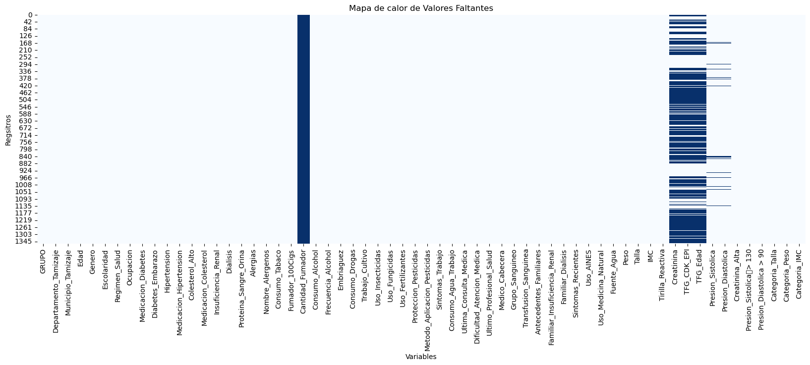
Resumen_Faltantes(df)
| Valores faltantes | Porcentaje (%) | |
|---|---|---|
| Cantidad_Fumador | 1356 | 100.000000 |
| Creatinina | 886 | 65.339233 |
| TFG_CDK_EPI | 886 | 65.339233 |
| TFG_Edad | 886 | 65.339233 |
| Presion_Sistolica | 47 | 3.466077 |
| Presion_Diastolica | 47 | 3.466077 |
La variable Cantidad_Fumador, al encontrarse completamente vacía, será eliminada de la base de datos.
df = df.drop(columns = "Cantidad_Fumador")
Por otro lado, las variables Presion_Sistolica y Presion_Diastolica presentan un 3.46% de valores faltantes (aproximadamente 47 registros), por lo que podrían imputarse mediante medidas de tendencia central como la media o la mediana; no obstante, esta decisión debe evaluarse previamente.
En cuanto a las variables Creatinina, TFG_CDK_EPI y TFG_Edad, la situación es más compleja, ya que presentan un 65.34% de valores faltantes (alrededor de 886 registros). Dada esta alta proporción, sería necesario considerar métodos de imputación más avanzados, como modelos predictivos. Sin embargo, es fundamental evaluar cuidadosamente que dichos métodos no alteren de manera significativa la distribución original de los datos ni introduzcan sesgos en el análisis.
Análisis Exploratorio de los datos (sin Valores Faltantes):#
Eliminación de valores faltantes:#
Resumen_Faltantes(df)
| Valores faltantes | Porcentaje (%) | |
|---|---|---|
| Creatinina | 886 | 65.339233 |
| TFG_CDK_EPI | 886 | 65.339233 |
| TFG_Edad | 886 | 65.339233 |
| Presion_Sistolica | 47 | 3.466077 |
| Presion_Diastolica | 47 | 3.466077 |
df = df.dropna(subset=['Creatinina', 'TFG_CDK_EPI', 'TFG_Edad'])
Resumen_Faltantes(df)
| Valores faltantes | Porcentaje (%) | |
|---|---|---|
| Presion_Sistolica | 12 | 2.553191 |
| Presion_Diastolica | 12 | 2.553191 |
Imputación por la Mediana (Presion_Sistolica & Presion_Diatolica):#
Presion_Sistolica:#
df_imputed = df.copy()
df_imputed = imputacion_por_mediana(df_imputed,"Presion_Sistolica")
df_imputed.head()
C:\Users\Mari\AppData\Local\Temp\ipykernel_22088\855378441.py:4: FutureWarning: A value is trying to be set on a copy of a DataFrame or Series through chained assignment using an inplace method.
The behavior will change in pandas 3.0. This inplace method will never work because the intermediate object on which we are setting values always behaves as a copy.
For example, when doing 'df[col].method(value, inplace=True)', try using 'df.method({col: value}, inplace=True)' or df[col] = df[col].method(value) instead, to perform the operation inplace on the original object.
df[columna].fillna(mediana, inplace=True)
| GRUPO | Departamento_Tamizaje | Municipio_Tamizaje | Edad | Genero | Escolaridad | Regimen_Salud | Ocupacion | Medicacion_Diabetes | Diabetes_Embarazo | Hipertension | Medicacion_Hipertension | Colesterol_Alto | Medicacion_Colesterol | Insuficiencia_Renal | Dialisis | Proteina_Sangre_Orina | Alergias | Nombre_Alergenos | Consumo_Tabaco | Fumador_100Cigs | Consumo_Alcohol | Frecuencia_Alcohol | Embriaguez | Consumo_Drogas | Trabajo_Cultivo | Uso_Insecticidas | Uso_Fungicidas | Uso_Fertilizantes | Proteccion_Pesticidas | Metodo_Aplicacion_Pesticidas | Sintomas_Trabajo | Consumo_Agua_Trabajo | Ultima_Consulta_Medica | Dificultad_Atencion_Medica | Ultimo_Profesional_Salud | Medico_Cabecera | Grupo_Sanguineo | Transfusion_Sanguinea | Antecedentes_Familiares | Familiar_Insuficiencia_Renal | Familiar_Dialisis | Sintomas_Recientes | Uso_AINES | Uso_Medicina_Natural | Fuente_Agua | Peso | Talla | IMC | Tirilla_Reactiva | Creatinina | TFG_CDK_EPI | TFG_Edad | Presion_Sistolica | Presion_Diastolica | Creatinina_Alta | Presion_Sistolica\t> 130 | Presion_Diastolica > 90 | Categoria_Talla | Categoria_Peso | Categoria_IMC | |
|---|---|---|---|---|---|---|---|---|---|---|---|---|---|---|---|---|---|---|---|---|---|---|---|---|---|---|---|---|---|---|---|---|---|---|---|---|---|---|---|---|---|---|---|---|---|---|---|---|---|---|---|---|---|---|---|---|---|---|---|---|---|
| 0 | AFRODESCENDIENTE | BOLIVAR | MARIA LA BAJA | 57 | Femenino | Primaria | Subsidiado | Desempleado | Si | No | Si | Si | Si | Si | No | No | No | No | No aplica | No | No | No | Nunca | No | No | No | No | No | No | No aplica | No aplica | No siente nada | Mas de 1 litro | Mayor a 3 meses | Muy Dificil | Internista | Si | B+ | No | Hipertensión Arterial | No | No | Ninguno | No | No | Suministro municipal | 63 | 1.66 | 22.862534 | Negativo | 0.9 | 82.26 | 73.0 | 175.0 | 89.0 | No | 1 | 0 | 1.61-1.70 | 61-80 | Normal |
| 1 | AFRODESCENDIENTE | ATLANTICO | BARRANQUILLA | 28 | Femenino | Secundaria | Subsidiado | Desempleado | No | Sí | No | No | No | No | No | No | No | No | No aplica | No | No | Si | 1-2 veces por mes | No | No | No | No | No | No | No aplica | No aplica | No siente nada | Mas de 200 cc | Mayor a 3 meses | Difícil | Medico General | No | O+ | No | Hipertensión Arterial | No | No | Ninguno | No | No | Suministro municipal | 75 | 1.63 | 28.228386 | Negativo | 0.7 | 116.28 | 102.0 | 97.0 | 70.0 | No | 0 | 0 | 1.61-1.70 | 61-80 | Alto |
| 10 | AFRODESCENDIENTE | BOLIVAR | PALENQUE | 56 | Femenino | Primaria | Subsidiado | Desempleado | Si | No | Si | Si | Si | Si | No | No | No | No | No aplica | No | No | No | Nunca | No aplica | No | No | No | No | No | No aplica | No aplica | Latidos fuertes y rapidos | Mas de 5 litros | Hace un mes | Facil | Internista | Si | O+ | No | Hipertensión Arterial | No | No | Dolor de cabeza | Si | Si | Suministro municipal | 60 | 1.61 | 23.147255 | Negativo | 0.8 | 118.10 | 74.0 | 176.0 | 110.0 | No | 1 | 1 | 1.61-1.70 | 41-60 | Normal |
| 11 | AFRODESCENDIENTE | PALENQUE | PALENQUE | 69 | Femenino | Primaria | Subsidiado | Agricultor | No | No aplica | No | No | No | No | No | No | No | No | No aplica | No | Si | No | Nunca | No | No | Si | No | No | No | No aplica | No aplica | No siente nada | Menos de 100 cc | Mayor a 3 meses | Difícil | Medico General | No | A+ | No | Hipertensión Arterial | No | No | Ninguno | No | No | Suministro municipal | 55 | 1.62 | 20.957171 | Negativo | 1.0 | 66.57 | 61.0 | 130.0 | 70.0 | No | 0 | 0 | 1.61-1.70 | 41-60 | Normal |
| 12 | AFRODESCENDIENTE | ATLANTICO | BARRANQUILLA | 56 | Masculino | Secundaria | Subsidiado | Albañil | No | No aplica | No | No | No | No | No | No | No | No | No aplica | No | No | Si | 1-2 veces por semana | Si | No | No | No | No | No | No aplica | No aplica | No siente nada | Mas de 1 litro | Mayor a 2 años | Facil | Medico General | No | O+ | No | Cancer | No | No | Ninguno | No | No | Suministro municipal | 62 | 1.56 | 25.476660 | Negativo | 0.9 | 110.27 | 74.0 | 161.0 | 77.0 | No | 1 | 0 | 1.50-1.60 | 61-80 | Alto |
analizar_misma_variable(df,df_imputed,"Presion_Sistolica")
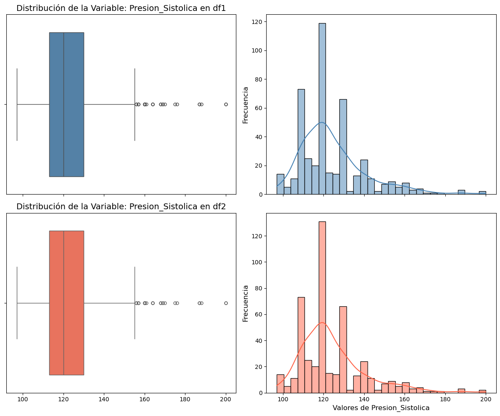
distribucion_cruzada(df,df_imputed,"Presion_Sistolica")
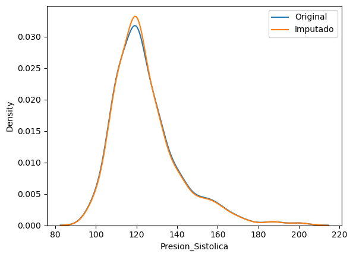
pd.concat([df["Presion_Sistolica"].describe(), df_imputed["Presion_Sistolica"].describe()], axis=1,
keys=["Original", "Imputado"])
| Original | Imputado | |
|---|---|---|
| count | 458.000000 | 470.000000 |
| mean | 124.589520 | 124.472340 |
| std | 16.448902 | 16.253269 |
| min | 97.000000 | 97.000000 |
| 25% | 113.000000 | 113.000000 |
| 50% | 120.000000 | 120.000000 |
| 75% | 130.000000 | 130.000000 |
| max | 200.000000 | 200.000000 |
prueba_kolmogrov(df,df_imputed,"Presion_Sistolica", 'Presion_Sistolica')
KS statistic: 0.011, p-value: 1.000
No hay evidencia estadísticamente significativa que evidencia que las distribuciones difieran
Presion_Diastolica:#
df_imputed = imputacion_por_mediana(df_imputed,"Presion_Diastolica")
df_imputed.head()
C:\Users\Mari\AppData\Local\Temp\ipykernel_22088\855378441.py:4: FutureWarning: A value is trying to be set on a copy of a DataFrame or Series through chained assignment using an inplace method.
The behavior will change in pandas 3.0. This inplace method will never work because the intermediate object on which we are setting values always behaves as a copy.
For example, when doing 'df[col].method(value, inplace=True)', try using 'df.method({col: value}, inplace=True)' or df[col] = df[col].method(value) instead, to perform the operation inplace on the original object.
df[columna].fillna(mediana, inplace=True)
| GRUPO | Departamento_Tamizaje | Municipio_Tamizaje | Edad | Genero | Escolaridad | Regimen_Salud | Ocupacion | Medicacion_Diabetes | Diabetes_Embarazo | Hipertension | Medicacion_Hipertension | Colesterol_Alto | Medicacion_Colesterol | Insuficiencia_Renal | Dialisis | Proteina_Sangre_Orina | Alergias | Nombre_Alergenos | Consumo_Tabaco | Fumador_100Cigs | Consumo_Alcohol | Frecuencia_Alcohol | Embriaguez | Consumo_Drogas | Trabajo_Cultivo | Uso_Insecticidas | Uso_Fungicidas | Uso_Fertilizantes | Proteccion_Pesticidas | Metodo_Aplicacion_Pesticidas | Sintomas_Trabajo | Consumo_Agua_Trabajo | Ultima_Consulta_Medica | Dificultad_Atencion_Medica | Ultimo_Profesional_Salud | Medico_Cabecera | Grupo_Sanguineo | Transfusion_Sanguinea | Antecedentes_Familiares | Familiar_Insuficiencia_Renal | Familiar_Dialisis | Sintomas_Recientes | Uso_AINES | Uso_Medicina_Natural | Fuente_Agua | Peso | Talla | IMC | Tirilla_Reactiva | Creatinina | TFG_CDK_EPI | TFG_Edad | Presion_Sistolica | Presion_Diastolica | Creatinina_Alta | Presion_Sistolica\t> 130 | Presion_Diastolica > 90 | Categoria_Talla | Categoria_Peso | Categoria_IMC | |
|---|---|---|---|---|---|---|---|---|---|---|---|---|---|---|---|---|---|---|---|---|---|---|---|---|---|---|---|---|---|---|---|---|---|---|---|---|---|---|---|---|---|---|---|---|---|---|---|---|---|---|---|---|---|---|---|---|---|---|---|---|---|
| 0 | AFRODESCENDIENTE | BOLIVAR | MARIA LA BAJA | 57 | Femenino | Primaria | Subsidiado | Desempleado | Si | No | Si | Si | Si | Si | No | No | No | No | No aplica | No | No | No | Nunca | No | No | No | No | No | No | No aplica | No aplica | No siente nada | Mas de 1 litro | Mayor a 3 meses | Muy Dificil | Internista | Si | B+ | No | Hipertensión Arterial | No | No | Ninguno | No | No | Suministro municipal | 63 | 1.66 | 22.862534 | Negativo | 0.9 | 82.26 | 73.0 | 175.0 | 89.0 | No | 1 | 0 | 1.61-1.70 | 61-80 | Normal |
| 1 | AFRODESCENDIENTE | ATLANTICO | BARRANQUILLA | 28 | Femenino | Secundaria | Subsidiado | Desempleado | No | Sí | No | No | No | No | No | No | No | No | No aplica | No | No | Si | 1-2 veces por mes | No | No | No | No | No | No | No aplica | No aplica | No siente nada | Mas de 200 cc | Mayor a 3 meses | Difícil | Medico General | No | O+ | No | Hipertensión Arterial | No | No | Ninguno | No | No | Suministro municipal | 75 | 1.63 | 28.228386 | Negativo | 0.7 | 116.28 | 102.0 | 97.0 | 70.0 | No | 0 | 0 | 1.61-1.70 | 61-80 | Alto |
| 10 | AFRODESCENDIENTE | BOLIVAR | PALENQUE | 56 | Femenino | Primaria | Subsidiado | Desempleado | Si | No | Si | Si | Si | Si | No | No | No | No | No aplica | No | No | No | Nunca | No aplica | No | No | No | No | No | No aplica | No aplica | Latidos fuertes y rapidos | Mas de 5 litros | Hace un mes | Facil | Internista | Si | O+ | No | Hipertensión Arterial | No | No | Dolor de cabeza | Si | Si | Suministro municipal | 60 | 1.61 | 23.147255 | Negativo | 0.8 | 118.10 | 74.0 | 176.0 | 110.0 | No | 1 | 1 | 1.61-1.70 | 41-60 | Normal |
| 11 | AFRODESCENDIENTE | PALENQUE | PALENQUE | 69 | Femenino | Primaria | Subsidiado | Agricultor | No | No aplica | No | No | No | No | No | No | No | No | No aplica | No | Si | No | Nunca | No | No | Si | No | No | No | No aplica | No aplica | No siente nada | Menos de 100 cc | Mayor a 3 meses | Difícil | Medico General | No | A+ | No | Hipertensión Arterial | No | No | Ninguno | No | No | Suministro municipal | 55 | 1.62 | 20.957171 | Negativo | 1.0 | 66.57 | 61.0 | 130.0 | 70.0 | No | 0 | 0 | 1.61-1.70 | 41-60 | Normal |
| 12 | AFRODESCENDIENTE | ATLANTICO | BARRANQUILLA | 56 | Masculino | Secundaria | Subsidiado | Albañil | No | No aplica | No | No | No | No | No | No | No | No | No aplica | No | No | Si | 1-2 veces por semana | Si | No | No | No | No | No | No aplica | No aplica | No siente nada | Mas de 1 litro | Mayor a 2 años | Facil | Medico General | No | O+ | No | Cancer | No | No | Ninguno | No | No | Suministro municipal | 62 | 1.56 | 25.476660 | Negativo | 0.9 | 110.27 | 74.0 | 161.0 | 77.0 | No | 1 | 0 | 1.50-1.60 | 61-80 | Alto |
analizar_misma_variable(df,df_imputed,"Presion_Diastolica")
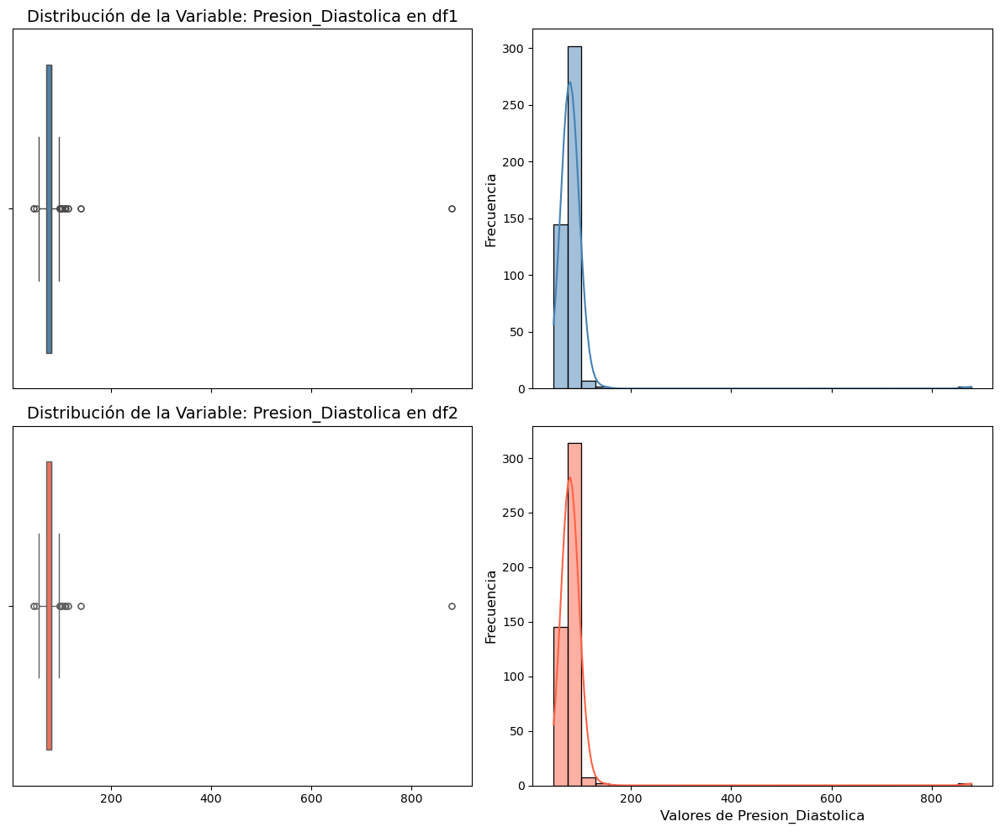
distribucion_cruzada(df,df_imputed,"Presion_Diastolica")
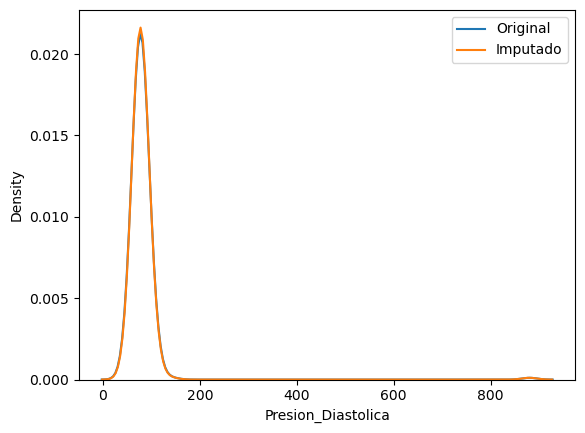
pd.concat([df["Presion_Diastolica"].describe(), df_imputed["Presion_Diastolica"].describe()], axis=1,
keys=["Original", "Imputado"])
| Original | Imputado | |
|---|---|---|
| count | 458.000000 | 470.000000 |
| mean | 81.707424 | 81.663830 |
| std | 54.039268 | 53.344135 |
| min | 45.000000 | 45.000000 |
| 25% | 70.000000 | 70.000000 |
| 50% | 80.000000 | 80.000000 |
| 75% | 81.000000 | 81.000000 |
| max | 880.000000 | 880.000000 |
prueba_kolmogrov(df,df_imputed,"Presion_Diastolica", "Presion_Diastolica")
KS statistic: 0.012, p-value: 1.000
No hay evidencia estadísticamente significativa que evidencia que las distribuciones difieran
Nota:#
Se llevó a cabo la imputación de las variables Presion_Sistolica y Presion_Diastolica. Posteriormente, se analizó la distribución de las variables imputadas y se realizó la prueba de Kolmogorov-Smirnov para comparar las distribuciones antes y después de la imputación. Los resultados obtenidos indican que no existen diferencias estadísticamente significativas entre las distribuciones originales y las imputadas, lo que sugiere que las imputaciones se realizaron con éxito y no alteraron de manera relevante las características distribucionales de las variables.
df = df_imputed.copy()
Observación del Dataset:#
df.info()
<class 'pandas.core.frame.DataFrame'>
Index: 470 entries, 0 to 1356
Data columns (total 61 columns):
# Column Non-Null Count Dtype
--- ------ -------------- -----
0 GRUPO 470 non-null object
1 Departamento_Tamizaje 470 non-null object
2 Municipio_Tamizaje 470 non-null object
3 Edad 470 non-null int64
4 Genero 470 non-null object
5 Escolaridad 470 non-null object
6 Regimen_Salud 470 non-null object
7 Ocupacion 470 non-null object
8 Medicacion_Diabetes 470 non-null object
9 Diabetes_Embarazo 470 non-null object
10 Hipertension 470 non-null object
11 Medicacion_Hipertension 470 non-null object
12 Colesterol_Alto 470 non-null object
13 Medicacion_Colesterol 470 non-null object
14 Insuficiencia_Renal 470 non-null object
15 Dialisis 470 non-null object
16 Proteina_Sangre_Orina 470 non-null object
17 Alergias 470 non-null object
18 Nombre_Alergenos 470 non-null object
19 Consumo_Tabaco 470 non-null object
20 Fumador_100Cigs 470 non-null object
21 Consumo_Alcohol 470 non-null object
22 Frecuencia_Alcohol 470 non-null object
23 Embriaguez 470 non-null object
24 Consumo_Drogas 470 non-null object
25 Trabajo_Cultivo 470 non-null object
26 Uso_Insecticidas 470 non-null object
27 Uso_Fungicidas 470 non-null object
28 Uso_Fertilizantes 470 non-null object
29 Proteccion_Pesticidas 470 non-null object
30 Metodo_Aplicacion_Pesticidas 470 non-null object
31 Sintomas_Trabajo 470 non-null object
32 Consumo_Agua_Trabajo 470 non-null object
33 Ultima_Consulta_Medica 470 non-null object
34 Dificultad_Atencion_Medica 470 non-null object
35 Ultimo_Profesional_Salud 470 non-null object
36 Medico_Cabecera 470 non-null object
37 Grupo_Sanguineo 470 non-null object
38 Transfusion_Sanguinea 470 non-null object
39 Antecedentes_Familiares 470 non-null object
40 Familiar_Insuficiencia_Renal 470 non-null object
41 Familiar_Dialisis 470 non-null object
42 Sintomas_Recientes 470 non-null object
43 Uso_AINES 470 non-null object
44 Uso_Medicina_Natural 470 non-null object
45 Fuente_Agua 470 non-null object
46 Peso 470 non-null int64
47 Talla 470 non-null float64
48 IMC 470 non-null float64
49 Tirilla_Reactiva 470 non-null object
50 Creatinina 470 non-null float64
51 TFG_CDK_EPI 470 non-null float64
52 TFG_Edad 470 non-null float64
53 Presion_Sistolica 470 non-null float64
54 Presion_Diastolica 470 non-null float64
55 Creatinina_Alta 470 non-null object
56 Presion_Sistolica > 130 470 non-null object
57 Presion_Diastolica > 90 470 non-null object
58 Categoria_Talla 470 non-null object
59 Categoria_Peso 470 non-null object
60 Categoria_IMC 470 non-null object
dtypes: float64(7), int64(2), object(52)
memory usage: 227.7+ KB
Análisis Univariado:#
Variables Numéricas:#
nombre_var_num = df.select_dtypes(include = ['number']).columns
nombre_var_num
Index(['Edad', 'Peso', 'Talla', 'IMC', 'Creatinina', 'TFG_CDK_EPI', 'TFG_Edad',
'Presion_Sistolica', 'Presion_Diastolica'],
dtype='object')
df.drop(columns=['TFG_Edad'])
| GRUPO | Departamento_Tamizaje | Municipio_Tamizaje | Edad | Genero | Escolaridad | Regimen_Salud | Ocupacion | Medicacion_Diabetes | Diabetes_Embarazo | Hipertension | Medicacion_Hipertension | Colesterol_Alto | Medicacion_Colesterol | Insuficiencia_Renal | Dialisis | Proteina_Sangre_Orina | Alergias | Nombre_Alergenos | Consumo_Tabaco | Fumador_100Cigs | Consumo_Alcohol | Frecuencia_Alcohol | Embriaguez | Consumo_Drogas | Trabajo_Cultivo | Uso_Insecticidas | Uso_Fungicidas | Uso_Fertilizantes | Proteccion_Pesticidas | Metodo_Aplicacion_Pesticidas | Sintomas_Trabajo | Consumo_Agua_Trabajo | Ultima_Consulta_Medica | Dificultad_Atencion_Medica | Ultimo_Profesional_Salud | Medico_Cabecera | Grupo_Sanguineo | Transfusion_Sanguinea | Antecedentes_Familiares | Familiar_Insuficiencia_Renal | Familiar_Dialisis | Sintomas_Recientes | Uso_AINES | Uso_Medicina_Natural | Fuente_Agua | Peso | Talla | IMC | Tirilla_Reactiva | Creatinina | TFG_CDK_EPI | Presion_Sistolica | Presion_Diastolica | Creatinina_Alta | Presion_Sistolica\t> 130 | Presion_Diastolica > 90 | Categoria_Talla | Categoria_Peso | Categoria_IMC | |
|---|---|---|---|---|---|---|---|---|---|---|---|---|---|---|---|---|---|---|---|---|---|---|---|---|---|---|---|---|---|---|---|---|---|---|---|---|---|---|---|---|---|---|---|---|---|---|---|---|---|---|---|---|---|---|---|---|---|---|---|---|
| 0 | AFRODESCENDIENTE | BOLIVAR | MARIA LA BAJA | 57 | Femenino | Primaria | Subsidiado | Desempleado | Si | No | Si | Si | Si | Si | No | No | No | No | No aplica | No | No | No | Nunca | No | No | No | No | No | No | No aplica | No aplica | No siente nada | Mas de 1 litro | Mayor a 3 meses | Muy Dificil | Internista | Si | B+ | No | Hipertensión Arterial | No | No | Ninguno | No | No | Suministro municipal | 63 | 1.66 | 22.862534 | Negativo | 0.9 | 82.26 | 175.0 | 89.0 | No | 1 | 0 | 1.61-1.70 | 61-80 | Normal |
| 1 | AFRODESCENDIENTE | ATLANTICO | BARRANQUILLA | 28 | Femenino | Secundaria | Subsidiado | Desempleado | No | Sí | No | No | No | No | No | No | No | No | No aplica | No | No | Si | 1-2 veces por mes | No | No | No | No | No | No | No aplica | No aplica | No siente nada | Mas de 200 cc | Mayor a 3 meses | Difícil | Medico General | No | O+ | No | Hipertensión Arterial | No | No | Ninguno | No | No | Suministro municipal | 75 | 1.63 | 28.228386 | Negativo | 0.7 | 116.28 | 97.0 | 70.0 | No | 0 | 0 | 1.61-1.70 | 61-80 | Alto |
| 10 | AFRODESCENDIENTE | BOLIVAR | PALENQUE | 56 | Femenino | Primaria | Subsidiado | Desempleado | Si | No | Si | Si | Si | Si | No | No | No | No | No aplica | No | No | No | Nunca | No aplica | No | No | No | No | No | No aplica | No aplica | Latidos fuertes y rapidos | Mas de 5 litros | Hace un mes | Facil | Internista | Si | O+ | No | Hipertensión Arterial | No | No | Dolor de cabeza | Si | Si | Suministro municipal | 60 | 1.61 | 23.147255 | Negativo | 0.8 | 118.10 | 176.0 | 110.0 | No | 1 | 1 | 1.61-1.70 | 41-60 | Normal |
| 11 | AFRODESCENDIENTE | PALENQUE | PALENQUE | 69 | Femenino | Primaria | Subsidiado | Agricultor | No | No aplica | No | No | No | No | No | No | No | No | No aplica | No | Si | No | Nunca | No | No | Si | No | No | No | No aplica | No aplica | No siente nada | Menos de 100 cc | Mayor a 3 meses | Difícil | Medico General | No | A+ | No | Hipertensión Arterial | No | No | Ninguno | No | No | Suministro municipal | 55 | 1.62 | 20.957171 | Negativo | 1.0 | 66.57 | 130.0 | 70.0 | No | 0 | 0 | 1.61-1.70 | 41-60 | Normal |
| 12 | AFRODESCENDIENTE | ATLANTICO | BARRANQUILLA | 56 | Masculino | Secundaria | Subsidiado | Albañil | No | No aplica | No | No | No | No | No | No | No | No | No aplica | No | No | Si | 1-2 veces por semana | Si | No | No | No | No | No | No aplica | No aplica | No siente nada | Mas de 1 litro | Mayor a 2 años | Facil | Medico General | No | O+ | No | Cancer | No | No | Ninguno | No | No | Suministro municipal | 62 | 1.56 | 25.476660 | Negativo | 0.9 | 110.27 | 161.0 | 77.0 | No | 1 | 0 | 1.50-1.60 | 61-80 | Alto |
| ... | ... | ... | ... | ... | ... | ... | ... | ... | ... | ... | ... | ... | ... | ... | ... | ... | ... | ... | ... | ... | ... | ... | ... | ... | ... | ... | ... | ... | ... | ... | ... | ... | ... | ... | ... | ... | ... | ... | ... | ... | ... | ... | ... | ... | ... | ... | ... | ... | ... | ... | ... | ... | ... | ... | ... | ... | ... | ... | ... | ... |
| 1327 | AFRODESCENDIENTE | BOLIVAR | PONTEZUELA | 71 | Masculino | Primaria | Subsidiado | Desempleado | No | No | No | No | No | No | No | No | No | No | No aplica | No | No | No | Nunca | No | No | No | No | No | No | No aplica | No aplica | No siente nada | Mas de 1 litro | Mayor a 1 año | Difícil | Medico General | No | O+ | No | Hipertensión Arterial | No | No | Ninguno | No | No | Suministro municipal | 54 | 1.62 | 20.576132 | Positiva | 1.5 | 87.37 | 116.0 | 81.0 | Si | 0 | 0 | 1.61-1.70 | 41-60 | Normal |
| 1335 | AFRODESCENDIENTE | BOLIVAR | PONTEZUELA | 58 | Masculino | Bachiller | Subsidiado | Desempleado | No | No | No | No | No | No | No | No | No | No | No aplica | No | No | No | Nunca | No | No | No | No | No | No | No aplica | No aplica | No siente nada | Mas de 1 litro | Mayor a 1 año | Difícil | Medico General | No | O+ | No | Hipertensión Arterial | No | No | Ninguno | No | No | Suministro municipal | 67 | 1.68 | 23.738662 | Positiva | 1.2 | 95.73 | 116.0 | 80.0 | Si | 0 | 0 | 1.61-1.70 | 61-80 | Normal |
| 1352 | AFRODESCENDIENTE | BOLIVAR | PONTEZUELA | 19 | Masculino | Bachiller | Contributivo | Desempleado | No | No | No | No | No | No | No | No | No | No | No aplica | No | No | Si | 1-2 veces por mes | No | No | No | No | No | No | No aplica | No aplica | No siente nada | Mas de 1 litro | Mayor a 1 año | Difícil | Medico General | No | O+ | No | Hipertensión Arterial | No | No | Ninguno | No | No | Suministro municipal | 76 | 1.75 | 24.816327 | Positiva | 1.7 | 125.90 | 118.0 | 82.0 | Si | 0 | 0 | >1.70 | 61-80 | Normal |
| 1355 | AFRODESCENDIENTE | BOLIVAR | PONTEZUELA | 39 | Femenino | Bachiller | Subsidiado | Desempleado | No | No | No | No | No | No | No | No | No | No | No aplica | No | No | Si | 1-2 veces por mes | No | No | No | No | No | No | No aplica | No aplica | No siente nada | Mas de 1 litro | Mayor a 1 año | Difícil | Medico General | No | O+ | No | Hipertensión Arterial | No | No | Ninguno | No | No | Suministro municipal | 92 | 1.96 | 23.948355 | Negativo | 0.9 | 93.35 | 120.0 | 83.0 | No | 0 | 0 | >1.70 | >80 | Normal |
| 1356 | AFRODESCENDIENTE | BOLIVAR | PONTEZUELA | 54 | Femenino | Bachiller | Contributivo | Desempleado | No | No | No | No | No | No | No | No | No | No | No aplica | No | No | Si | 1-2 veces por mes | No | No | No | No | No | No | No aplica | No aplica | No siente nada | Mas de 1 litro | Mayor a 1 año | Difícil | Medico General | No | O+ | No | Hipertensión Arterial | No | No | Ninguno | No | No | Suministro municipal | 60 | 1.61 | 23.147255 | Positiva | 1.1 | 73.97 | 115.0 | 76.0 | No | 0 | 0 | 1.61-1.70 | 41-60 | Normal |
470 rows × 60 columns
df[nombre_var_num].describe()
| Edad | Peso | Talla | IMC | Creatinina | TFG_CDK_EPI | TFG_Edad | Presion_Sistolica | Presion_Diastolica | |
|---|---|---|---|---|---|---|---|---|---|
| count | 470.000000 | 470.000000 | 470.000000 | 470.000000 | 470.000000 | 470.000000 | 470.000000 | 470.000000 | 470.000000 |
| mean | 47.463830 | 70.791489 | 1.647702 | 26.229239 | 1.156787 | 81.542596 | 82.536170 | 124.472340 | 81.663830 |
| std | 17.417419 | 14.258321 | 0.082995 | 5.845113 | 0.388140 | 31.470822 | 17.417419 | 16.253269 | 53.344135 |
| min | 14.000000 | 31.000000 | 1.440000 | 12.576575 | 0.600000 | 22.140000 | 33.000000 | 97.000000 | 45.000000 |
| 25% | 36.000000 | 61.000000 | 1.600000 | 22.647377 | 0.806750 | 54.545000 | 71.250000 | 113.000000 | 70.000000 |
| 50% | 48.000000 | 70.000000 | 1.650000 | 25.737590 | 1.000000 | 78.830000 | 82.000000 | 120.000000 | 80.000000 |
| 75% | 58.750000 | 80.000000 | 1.700000 | 29.712125 | 1.479500 | 105.972500 | 94.000000 | 130.000000 | 81.000000 |
| max | 97.000000 | 120.000000 | 1.960000 | 46.563288 | 2.500000 | 168.190000 | 116.000000 | 200.000000 | 880.000000 |
El conjunto de datos presenta 470 observaciones completas con valores en general coherentes para una población adulta: la edad promedio es de 47 años con alta variabilidad, el peso y la talla se encuentran en rangos esperados, y el IMC promedio (26.23) sugiere una tendencia al sobrepeso. Asimismo, los valores de creatinina y las tasas de filtración glomerular (TFG) indican una función renal promedio dentro de rangos aceptables, aunque con cierta dispersión. Sin embargo, se identifica un problema importante en la variable de presión diastólica, donde, a pesar de tener una media y mediana razonables, aparece un valor máximo de 880, lo cual es fisiológicamente imposible y evidencia un error en los datos; este valor atípico también explica la alta desviación estándar y podría afectar negativamente análisis posteriores, por lo que debe ser corregido o eliminado.
df = df[df['Edad'] >18]
registros = len(df)
registros
460
analizar_distribucion(df,"Edad")
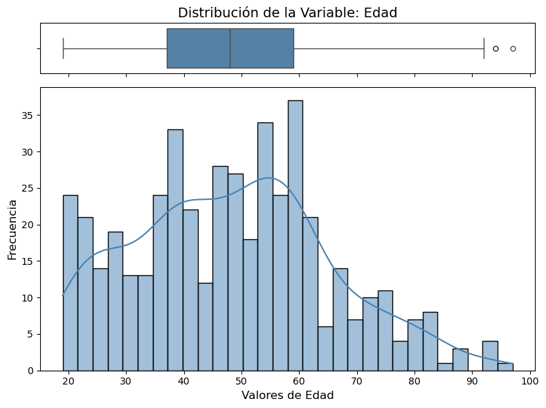
Se observa que la distribución de la variable Edad no se ajusta a una distribución normal, ya que presenta un ligero sesgo hacia la derecha. Este comportamiento se explica por la mayor concentración de observaciones en el rango de 20 a 60 años, junto con la presencia de valores atípicos cercanos a los 100 años, los cuales generan una cola derecha más extendida y contribuyen a la asimetría de la distribución.
analizar_distribucion(df,"Peso")
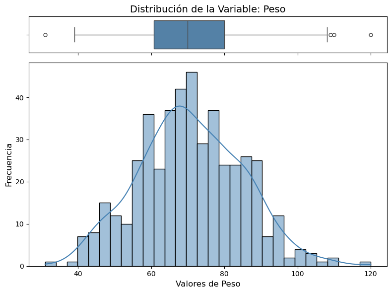
Se observa que la distribución de la variable Peso se aproxima visualmente a una distribución normal; sin embargo, presenta una ligera asimetría positiva (sesgo hacia la derecha). Este comportamiento se explica por el alargamiento de la cola derecha, asociado a la presencia de valores atípicos identificados en el boxplot, los cuales se sitúan aproximadamente entre los 100 kg y 120 kg.
analizar_distribucion(df,"Talla")
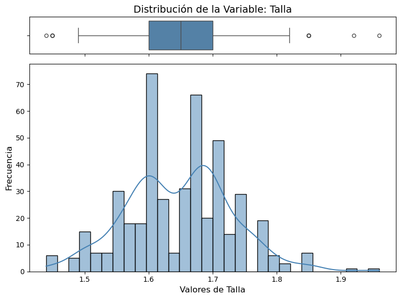
En la distribución de la variable Talla se observa una ligera asimetría hacia la derecha, asociada a la presencia de valores extremos que superan los 1.90 m. Asimismo, la distribución presenta un comportamiento bimodal, con dos picos claramente identificables: uno alrededor de 1.60 m y otro cercano a 1.68–1.69 m, lo que evidencia una alta concentración de registros en estos rangos de estatura.
analizar_distribucion(df,"IMC")
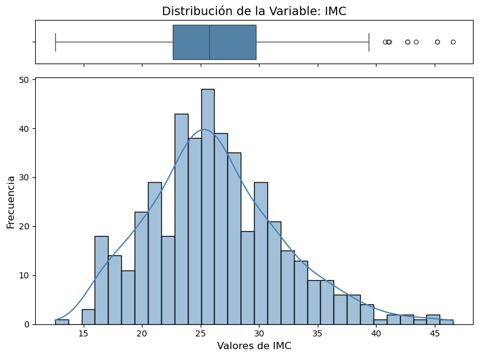
En cuanto al IMC, se observa una distribución aproximadamente unimodal y cercana a una forma acampanada; sin embargo, presenta una asimetría positiva (hacia la derecha). Esta característica se explica por la presencia de valores elevados y atípicos, especialmente por encima de 40 kg/m², que extienden la cola derecha de la distribución.
analizar_distribucion(df,"Creatinina")
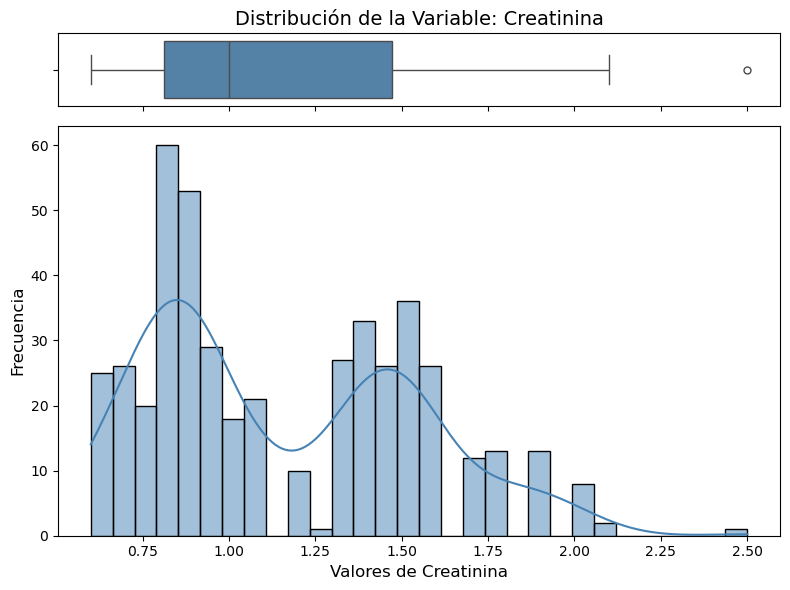
La variable creatinina presenta una distribución bimodal, con dos concentraciones principales de observaciones: la primera entre 0.75 y 1.00 mg/dL, y la segunda entre 1.35 y 1.60 mg/dL. Adicionalmente, se identifica una asimetría hacia la derecha, lo cual sugiere la presencia de valores elevados poco frecuentes. Esta característica se ve respaldada por el boxplot, en el que se evidencia al menos un valor atípico extremo cercano a 2.50 mg/dL.
df["TFG_CDK_EPI"].describe()
count 460.000000
mean 80.903500
std 31.072917
min 22.140000
25% 54.490000
50% 78.790000
75% 104.492500
max 168.190000
Name: TFG_CDK_EPI, dtype: float64
analizar_distribucion(df,"TFG_CDK_EPI")
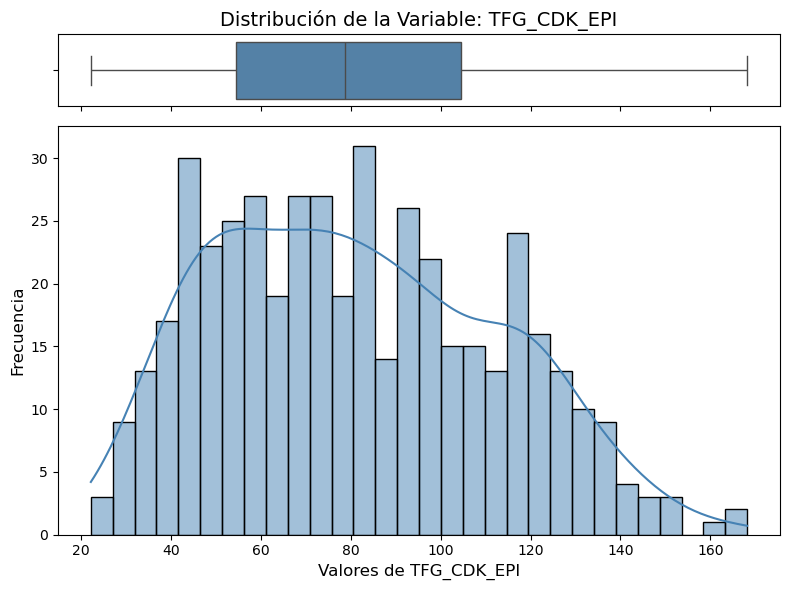
En el caso de la TFG_CDK_EPI observamos una distribución que no se ajusta completamente a la normal, presentando una ligera asimetría hacia la derecha. Se evidencia una mayor concentración de valores entre aproximadamente 45 y 100, con una disminución progresiva en la frecuencia a medida que los valores aumentan. Así mismo, el boxplot no muestra valores atípicos marcados, sin embargo sí se observa una dispersión amplia de los datos, con valores que se extienden hasta aproximadamente 165, lo cual contribuye a la prolongación de la cola derecha de la distribución.
analizar_distribucion(df,"TFG_Edad")
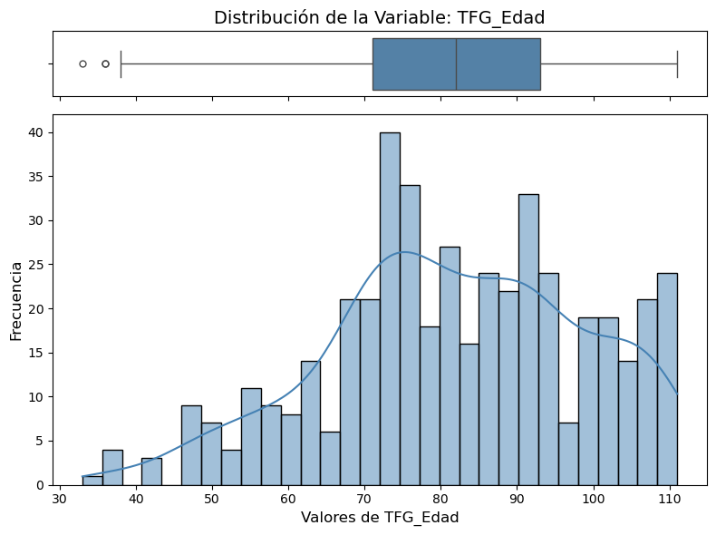
La distribución de la variable no se ajusta a una forma normal, ya que presenta una asimetría negativa (hacia la izquierda). Esta característica se ve respaldada por el boxplot, en el cual se observa una mayor dispersión en el extremo inferior, así como la presencia de dos valores atípicos por debajo de 40, los cuales contribuyen a la prolongación de la cola izquierda.
analizar_distribucion(df,"Presion_Sistolica")
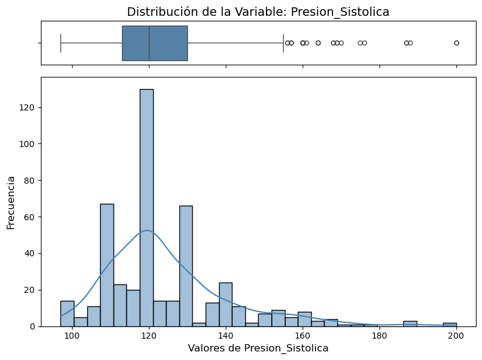
En el caso de la Presión Sistólica observamos una distribución que no se ajusta a la normal, presentando una marcada asimetría hacia la derecha. Se evidencia una mayor concentración de valores entre aproximadamente 110 y 130 mmHg, con un pico principal cercano a 120 mmHg. Así mismo, el boxplot muestra una importante presencia de valores atípicos altos, varios de ellos por encima de 150 mmHg e incluso cercanos a 200 mmHg, los cuales explican la prolongación de la cola derecha y la asimetría observada en la distribución.
analizar_distribucion(df,"Presion_Diastolica")
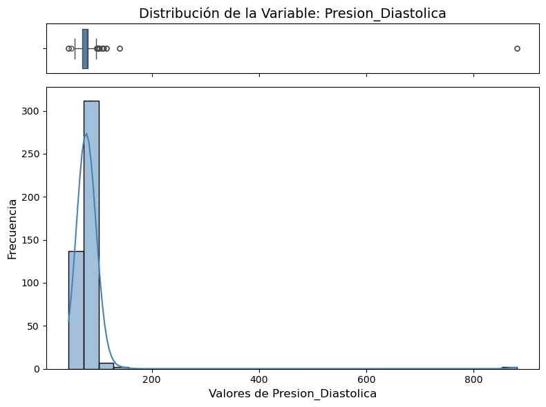
La variable Presión Diastólica presenta una distribución claramente no normal, con una asimetría positiva pronunciada. Dicha asimetría se encuentra fuertemente influenciada por la presencia de valores atípicos extremos, incluyendo registros superiores a 800 mmHg. Considerando que estos valores no son fisiológicamente plausibles, se hace indispensable su revisión detallada, ya que podrían corresponder a errores de medición, digitación o almacenamiento de la información. En consecuencia, estos registros deben ser evaluados y tratados antes de cualquier análisis estadístico o proceso de modelado.
df.loc[df["Presion_Diastolica"] > 120,["Presion_Diastolica > 90","Presion_Diastolica"]]
| Presion_Diastolica > 90 | Presion_Diastolica | |
|---|---|---|
| 292 | 1 | 880.0 |
| 625 | 1 | 140.0 |
| 935 | 1 | 880.0 |
| 1142 | 1 | 140.0 |
Durante la exploración de la variable Presion_Diastólica se identificaron registros con valores de hasta 880 mmHg, los cuales no son clínicamente ni fisiológicamente plausibles. Estos hallazgos sugieren la presencia de errores de digitación o almacenamiento de la información. Considerando el contexto clínico de la variable y la naturaleza del valor observado, se asumió que dichos registros probablemente corresponden a 88 mmHg, con la adición errónea de un cero. Por esta razón, se realizará la corrección de estos valores y, en consecuencia, se ajustará su clasificación en la variable derivada Presion_Diastolica > 90.
df.loc[df["Presion_Diastolica"] == 880, "Presion_Diastolica"] = 88
df["Presion_Diastolica > 90"] = df["Presion_Diastolica"].apply(lambda x: "Sí" if x > 90 else "No")
analizar_distribucion(df,"Presion_Diastolica")
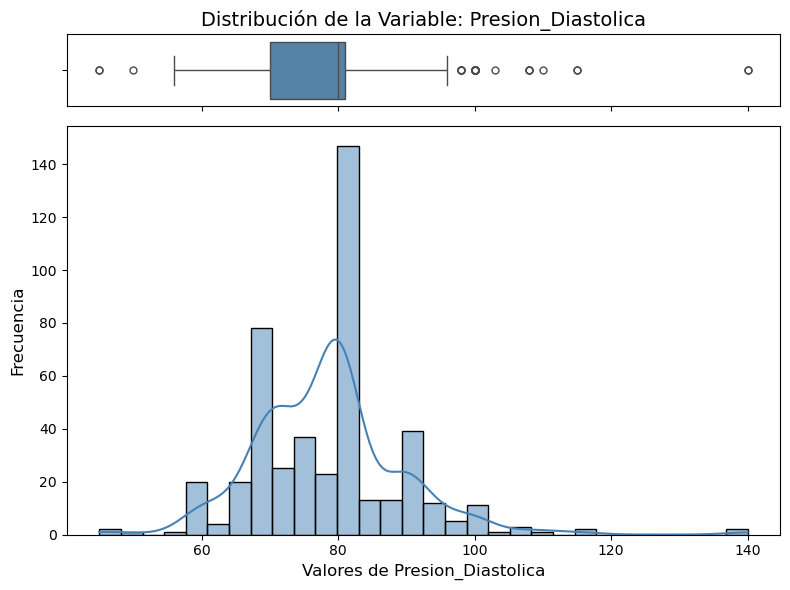
En el caso de la Presión Diastólica observamos una distribución que no se ajusta completamente a la normal, presentando una ligera asimetría hacia la derecha. Se evidencia una mayor concentración de valores entre aproximadamente 70 y 85 mmHg, con un pico principal cercano a 80 mmHg. Así mismo, el boxplot muestra la presencia de algunos valores atípicos tanto por debajo de 60 mmHg como por encima de 100 mmHg, e incluso un valor cercano a 140 mmHg, los cuales amplían la dispersión de la variable y contribuyen a la asimetría observada. En comparación con la distribución inicial, esta representación resulta más consistente y clínicamente plausible tras la corrección de los registros extremos.
Recalcular variables numéricas:#
Luego de observar las distribuciones de las variables dadas, se recalculan algunas variables numéricas como IMC y TFG para corroborar la calidad de los datos con respecto a formulas usadas en el área clínica.
IMC:#
Se calcula el IMC haciendo uso de la fórmula: peso/talla^2.
def calcular_imc(df, col_peso, col_estatura):
df['IMC_CAL'] = df[col_peso] / (df[col_estatura] ** 2)
df['IMC_CAL'] = df['IMC_CAL'].round(2)
calcular_imc(df, 'Peso', 'Talla')
df['IMC_CAL'].describe()
count 460.000000
mean 26.222761
std 5.769983
min 12.580000
25% 22.650000
50% 25.710000
75% 29.715000
max 46.560000
Name: IMC_CAL, dtype: float64
analizar_distribucion(df,"IMC_CAL")
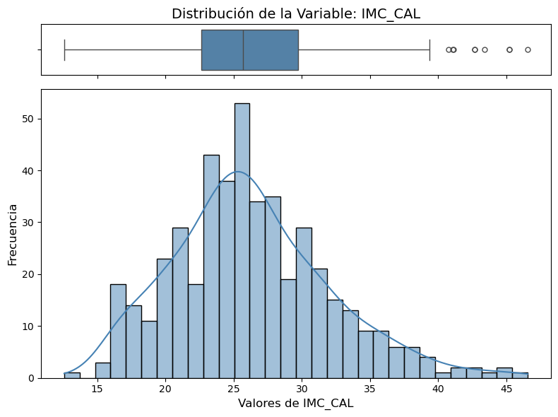
df[['IMC', 'IMC_CAL']].describe()
| IMC | IMC_CAL | |
|---|---|---|
| count | 460.000000 | 460.000000 |
| mean | 26.222665 | 26.222761 |
| std | 5.770292 | 5.769983 |
| min | 12.576575 | 12.580000 |
| 25% | 22.647377 | 22.650000 |
| 50% | 25.712199 | 25.710000 |
| 75% | 29.717343 | 29.715000 |
| max | 46.563288 | 46.560000 |
analizar_comparativa(df, df, 'IMC', 'IMC_CAL')
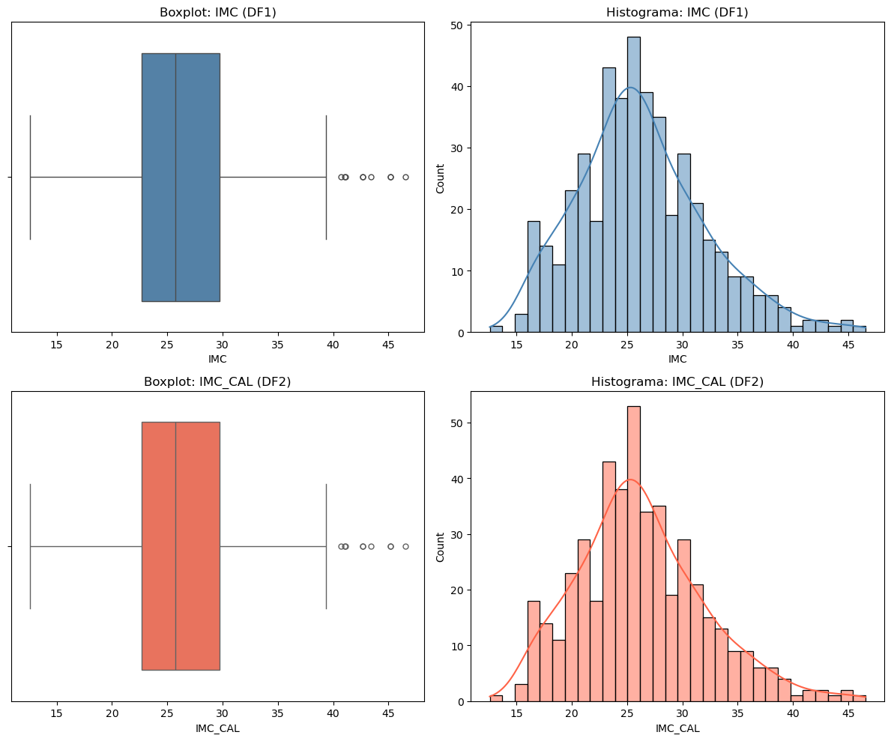
prueba_kolmogrov(df,df, 'IMC', 'IMC_CAL')
KS statistic: 0.015, p-value: 1.000
No hay evidencia estadísticamente significativa que evidencia que las distribuciones difieran
Después de comparar la variables original con la variable calculada, se puede concluir que no hay diferencias significativas entre ambas variables, apesar de pequeñas diferencias en los datos que estadísticamente no son significativas.
TFG calculada
Asimismo, se calcula la TFG según la fórmula internacional recomendada por la KDIGO.
Donde:
\(Cr\): Creatinina sérica en mg/dL.
\(\kappa\): 0.7 para mujeres, 0.9 para hombres.
\(\alpha\): -0.241 para mujeres, -0.302 para hombres.
import numpy as np
def calcular_tfg_ckdepi(creatinina, edad, sexo):
sexo = sexo.lower()
es_mujer = (sexo == 'femenino')
kappa = 0.7 if es_mujer else 0.9
alpha = -0.302 if not es_mujer else -0.241
factor_genero = 1.012 if es_mujer else 1.0
t1 = np.power(min(creatinina / kappa, 1), alpha)
t2 = np.power(max(creatinina / kappa, 1), -1.200)
tfg = 142 * t1 * t2 * (0.9938 ** edad) * factor_genero
return tfg
df["TFG_CDK_EPI_CAL"] = df.apply(
lambda row: calcular_tfg_ckdepi(row['Creatinina'], row['Edad'], row['Genero']),
axis=1
)
analizar_distribucion(df,"TFG_CDK_EPI_CAL")
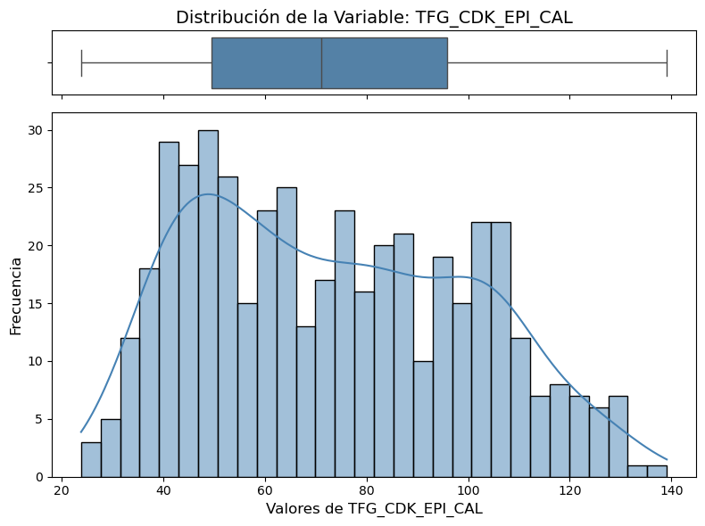
df[['TFG_CDK_EPI', 'TFG_CDK_EPI_CAL']].describe()
| TFG_CDK_EPI | TFG_CDK_EPI_CAL | |
|---|---|---|
| count | 460.000000 | 460.000000 |
| mean | 80.903500 | 73.161492 |
| std | 31.072917 | 26.764581 |
| min | 22.140000 | 23.820220 |
| 25% | 54.490000 | 49.416728 |
| 50% | 78.790000 | 71.103932 |
| 75% | 104.492500 | 95.930951 |
| max | 168.190000 | 139.105637 |
analizar_comparativa(df, df, 'TFG_CDK_EPI', 'TFG_CDK_EPI_CAL')
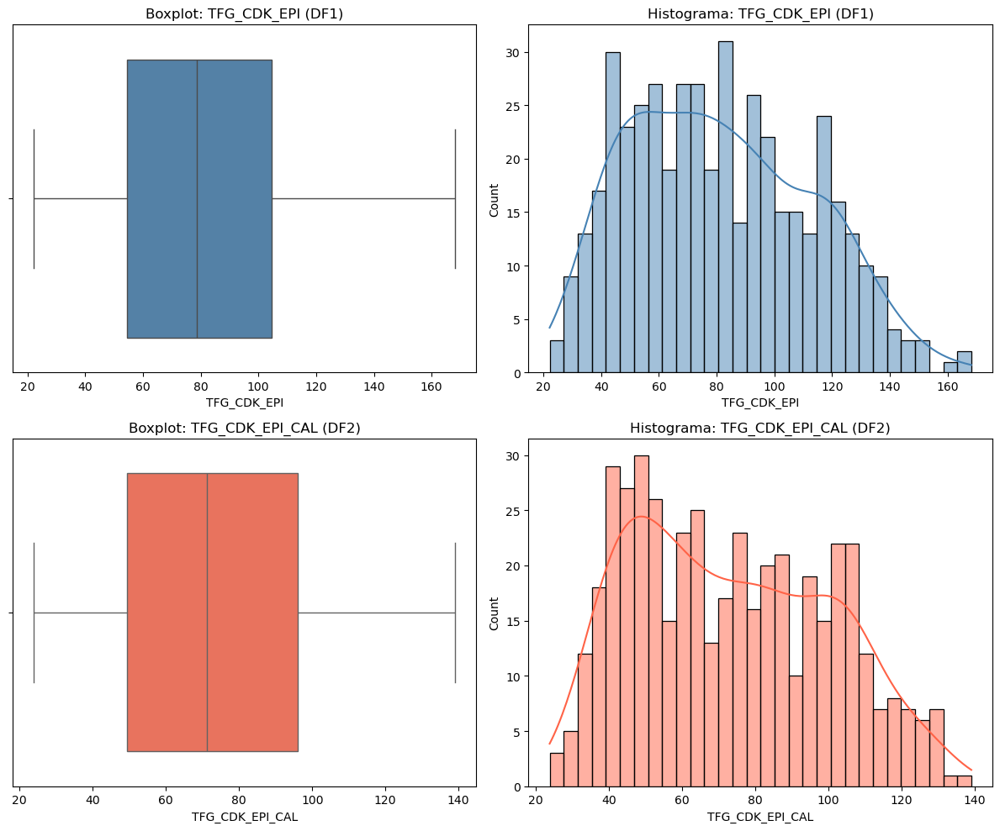
prueba_kolmogrov(df,df, 'TFG_CDK_EPI', 'TFG_CDK_EPI_CAL')
KS statistic: 0.126, p-value: 0.001
La distribución cambió significativamente
Note que las distribuciones son estadísticamente diferentes. No se conoce cómo se calculó la tasa de filtración glomedural que ya se encuentra establecida en la base de datos original, pero la formula de la tasa de filtración glomedural calculada (es decir, la que añadimos a la base de datos) es la ecuación CKD-EPI (Chronic Kidney Disease Epidemiology Collaboration) de 2021 basada exclusivamente en creatinina sérica, edad y sexo. También es la recomendada por las guías KDIGO (Kidney Disease: Improving Global Outcomes) para el tamizaje y la clasificación de la Enfermedad Renal Crónica (ERC) a nivel poblacional.
Luego, se verifica la TFG calculada concuerda con el resto de variables relacionadas. En este caso el estadio de la ERC según se estipula a nivel clínico.
bins_erc = [0, 15, 30, 45, 60, 90, np.inf]
labels_erc = [
"G5: Falla Renal (<15)",
"G4: Descenso Grave (15-29)",
"G3b: Descenso Moderado-Grave (30-44)",
"G3a: Descenso Leve-Moderado (45-59)",
"G2: Descenso Leve (60-89)",
"G1: Normal o Elevado (≥90)"
]
df["Estadio_ERC_CAL"] = pd.cut(
df["TFG_CDK_EPI_CAL"],
bins=bins_erc,
labels=labels_erc,
right=False
)
df["Estadio_ERC"] = pd.cut(
df["TFG_CDK_EPI"],
bins=bins_erc,
labels=labels_erc,
right=False
)
resumen_var_cat(df['Estadio_ERC_CAL'])
| Categorías | Conteo | Porcentaje | |
|---|---|---|---|
| 0 | G2: Descenso Leve (60-89) | 148 | 32.170000 |
| 1 | G1: Normal o Elevado (≥90) | 134 | 29.130000 |
| 2 | G3a: Descenso Leve-Moderado (45-59) | 100 | 21.740000 |
| 3 | G3b: Descenso Moderado-Grave (30-44) | 74 | 16.090000 |
| 4 | G4: Descenso Grave (15-29) | 4 | 0.870000 |
| 5 | G5: Falla Renal (<15) | 0 | 0.000000 |
Comparemos con la TFG de la base de datos original.
tabla = tabla_frecuencias_comparada(df, 'Estadio_ERC', df, 'Estadio_ERC_CAL', 'Estadio con TFG de la base de datos', 'Estadio con TFG calculada')
tabla
| Frec. Absoluta | Frec. Relativa (%) | ||
|---|---|---|---|
| Variable / Origen | Categoría | ||
| Estadio con TFG de la base de datos (Estadio_ERC) | G1: Normal o Elevado (≥90) | 176 | 38.26 |
| G2: Descenso Leve (60-89) | 145 | 31.52 | |
| G3a: Descenso Leve-Moderado (45-59) | 78 | 16.96 | |
| G3b: Descenso Moderado-Grave (30-44) | 53 | 11.52 | |
| G4: Descenso Grave (15-29) | 8 | 1.74 | |
| G5: Falla Renal (<15) | 0 | 0.00 | |
| Estadio con TFG calculada (Estadio_ERC_CAL) | G2: Descenso Leve (60-89) | 148 | 32.17 |
| G1: Normal o Elevado (≥90) | 134 | 29.13 | |
| G3a: Descenso Leve-Moderado (45-59) | 100 | 21.74 | |
| G3b: Descenso Moderado-Grave (30-44) | 74 | 16.09 | |
| G4: Descenso Grave (15-29) | 4 | 0.87 | |
| G5: Falla Renal (<15) | 0 | 0.00 |
Variables Categóricas#
Eliminación de variables:#
Se eliminan las variables que no se encuentran relacionadas con el objetivo de la investigación.
df.select_dtypes(include = "object").columns
Index(['GRUPO', 'Departamento_Tamizaje', 'Municipio_Tamizaje', 'Genero',
'Escolaridad', 'Regimen_Salud', 'Ocupacion', 'Medicacion_Diabetes',
'Diabetes_Embarazo', 'Hipertension', 'Medicacion_Hipertension',
'Colesterol_Alto', 'Medicacion_Colesterol', 'Insuficiencia_Renal',
'Dialisis', 'Proteina_Sangre_Orina', 'Alergias', 'Nombre_Alergenos',
'Consumo_Tabaco', 'Fumador_100Cigs', 'Consumo_Alcohol',
'Frecuencia_Alcohol', 'Embriaguez', 'Consumo_Drogas', 'Trabajo_Cultivo',
'Uso_Insecticidas', 'Uso_Fungicidas', 'Uso_Fertilizantes',
'Proteccion_Pesticidas', 'Metodo_Aplicacion_Pesticidas',
'Sintomas_Trabajo', 'Consumo_Agua_Trabajo', 'Ultima_Consulta_Medica',
'Dificultad_Atencion_Medica', 'Ultimo_Profesional_Salud',
'Medico_Cabecera', 'Grupo_Sanguineo', 'Transfusion_Sanguinea',
'Antecedentes_Familiares', 'Familiar_Insuficiencia_Renal',
'Familiar_Dialisis', 'Sintomas_Recientes', 'Uso_AINES',
'Uso_Medicina_Natural', 'Fuente_Agua', 'Tirilla_Reactiva',
'Creatinina_Alta', 'Presion_Sistolica\t> 130',
'Presion_Diastolica > 90', 'Categoria_Talla', 'Categoria_Peso',
'Categoria_IMC'],
dtype='object')
var_eliminar = ['Alergias', 'Ocupacion', 'Embriaguez', 'Sintomas_Trabajo', 'Nombre_Alergenos']
df = df.drop(columns=var_eliminar)
df.select_dtypes(include = "object").columns
Index(['GRUPO', 'Departamento_Tamizaje', 'Municipio_Tamizaje', 'Genero',
'Escolaridad', 'Regimen_Salud', 'Medicacion_Diabetes',
'Diabetes_Embarazo', 'Hipertension', 'Medicacion_Hipertension',
'Colesterol_Alto', 'Medicacion_Colesterol', 'Insuficiencia_Renal',
'Dialisis', 'Proteina_Sangre_Orina', 'Consumo_Tabaco',
'Fumador_100Cigs', 'Consumo_Alcohol', 'Frecuencia_Alcohol',
'Consumo_Drogas', 'Trabajo_Cultivo', 'Uso_Insecticidas',
'Uso_Fungicidas', 'Uso_Fertilizantes', 'Proteccion_Pesticidas',
'Metodo_Aplicacion_Pesticidas', 'Consumo_Agua_Trabajo',
'Ultima_Consulta_Medica', 'Dificultad_Atencion_Medica',
'Ultimo_Profesional_Salud', 'Medico_Cabecera', 'Grupo_Sanguineo',
'Transfusion_Sanguinea', 'Antecedentes_Familiares',
'Familiar_Insuficiencia_Renal', 'Familiar_Dialisis',
'Sintomas_Recientes', 'Uso_AINES', 'Uso_Medicina_Natural',
'Fuente_Agua', 'Tirilla_Reactiva', 'Creatinina_Alta',
'Presion_Sistolica\t> 130', 'Presion_Diastolica > 90',
'Categoria_Talla', 'Categoria_Peso', 'Categoria_IMC'],
dtype='object')
Reagrupación de categorías:#
Luego, se reagrupa las categorías de algunas variables según lo recomendado.
df_agrupado = df.copy()
Corrección de una categoría de Departamento_Tamizaje
df_agrupado['Departamento_Tamizaje'].unique()
array(['BOLIVAR', 'ATLANTICO', 'PALENQUE'], dtype=object)
df_agrupado["Departamento_Tamizaje"] = df_agrupado["Departamento_Tamizaje"].replace({
"PALENQUE":"BOLIVAR"
})
def normalizar_texto(texto):
if pd.isna(texto):
return ""
texto = str(texto).lower().strip()
texto = ''.join(
c for c in unicodedata.normalize('NFD', texto)
if unicodedata.category(c) != 'Mn'
)
return texto
Escolaridad:
df_agrupado["Escolaridad"].unique()
array(['Primaria', 'Secundaria', 'Técnica', 'No escolarizado',
'Bachiller', 'Posgrado', 'Universitaria'], dtype=object)
df_agrupado["Escolaridad"] = df_agrupado["Escolaridad"].replace({
"Secundaria":"Secundaria-Bachiller",
"Bachiller":"Secundaria-Bachiller",
"Técnica":"Educación_Superior",
"Universitaria":"Educación_Superior",
"Posgrado":"Educación_Superior"
})
tabla = tabla_frecuencias_comparada(df, 'Escolaridad', df_agrupado, 'Escolaridad')
tabla
| Frec. Absoluta | Frec. Relativa (%) | ||
|---|---|---|---|
| Variable / Origen | Categoría | ||
| Categorías originales (Escolaridad) | Bachiller | 133 | 28.91 |
| Primaria | 113 | 24.57 | |
| Técnica | 92 | 20.00 | |
| Universitaria | 47 | 10.22 | |
| Secundaria | 39 | 8.48 | |
| No escolarizado | 29 | 6.30 | |
| Posgrado | 7 | 1.52 | |
| Categorías agrupadas (Escolaridad) | Secundaria-Bachiller | 172 | 37.39 |
| Educación_Superior | 146 | 31.74 | |
| Primaria | 113 | 24.57 | |
| No escolarizado | 29 | 6.30 |
Regimen_Salud:
df_agrupado['Regimen_Salud'].unique()
array(['Subsidiado', 'Contributivo', 'Especial', 'No tiene'], dtype=object)
df_agrupado["Regimen_Salud"] = df_agrupado["Regimen_Salud"].replace({
"Contributivo": "Contributivo-Especial",
"Subsidiado": "Subsidiado-No_Tiene",
"Especial": "Contributivo-Especial",
"No tiene": "Subsidiado-No_Tiene"})
tabla = tabla_frecuencias_comparada(df, 'Regimen_Salud', df_agrupado, 'Regimen_Salud')
tabla
| Frec. Absoluta | Frec. Relativa (%) | ||
|---|---|---|---|
| Variable / Origen | Categoría | ||
| Categorías originales (Regimen_Salud) | Subsidiado | 291 | 63.26 |
| Contributivo | 96 | 20.87 | |
| No tiene | 44 | 9.57 | |
| Especial | 29 | 6.30 | |
| Categorías agrupadas (Regimen_Salud) | Subsidiado-No_Tiene | 335 | 72.83 |
| Contributivo-Especial | 125 | 27.17 |
Consumo_Agua_Trabajo:
df_agrupado['Consumo_Agua_Trabajo'].unique()
array(['Mas de 1 litro', 'Mas de 200 cc', 'Mas de 5 litros',
'Menos de 100 cc', 'No toma nada'], dtype=object)
df_agrupado["Consumo_Agua_Trabajo"] = df_agrupado["Consumo_Agua_Trabajo"].replace({
"Mas de 1 litro": "Consumo adecuado",
"Mas de 200 cc": "No toma nada",
"Mas de 5 litros": "No toma nada",
"Menos de 100 cc": "Consumo elevado"
})
tabla = tabla_frecuencias_comparada(df, 'Consumo_Agua_Trabajo', df_agrupado, 'Consumo_Agua_Trabajo')
tabla
| Frec. Absoluta | Frec. Relativa (%) | ||
|---|---|---|---|
| Variable / Origen | Categoría | ||
| Categorías originales (Consumo_Agua_Trabajo) | Mas de 1 litro | 284 | 61.74 |
| Mas de 200 cc | 69 | 15.00 | |
| No toma nada | 51 | 11.09 | |
| Mas de 5 litros | 31 | 6.74 | |
| Menos de 100 cc | 25 | 5.43 | |
| Categorías agrupadas (Consumo_Agua_Trabajo) | Consumo adecuado | 284 | 61.74 |
| No toma nada | 151 | 32.83 | |
| Consumo elevado | 25 | 5.43 |
Frecuencia_Alcohol:
df_agrupado["Frecuencia_Alcohol"].unique()
array(['Nunca', '1-2 veces por mes', '1-2 veces por semana',
'Menos de 1 vez al mes', '3-4 veces por semana', 'Diario'],
dtype=object)
df_agrupado["Frecuencia_Alcohol"] = df_agrupado["Frecuencia_Alcohol"].replace({
"Menos de 1 vez al mes":"Consumo_Ocasional",
"1-2 veces por mes":"Consumo_Ocasional",
"1-2 veces por semana":"Consumo_Frecuente",
"3-4 veces por semana":"Consumo_Frecuente",
"Diario":"Consumo_Habitual"})
tabla = tabla_frecuencias_comparada(df, 'Frecuencia_Alcohol', df_agrupado, 'Frecuencia_Alcohol')
tabla
| Frec. Absoluta | Frec. Relativa (%) | ||
|---|---|---|---|
| Variable / Origen | Categoría | ||
| Categorías originales (Frecuencia_Alcohol) | Nunca | 327 | 71.09 |
| 1-2 veces por mes | 68 | 14.78 | |
| Menos de 1 vez al mes | 45 | 9.78 | |
| 1-2 veces por semana | 17 | 3.70 | |
| Diario | 2 | 0.43 | |
| 3-4 veces por semana | 1 | 0.22 | |
| Categorías agrupadas (Frecuencia_Alcohol) | Nunca | 327 | 71.09 |
| Consumo_Ocasional | 113 | 24.57 | |
| Consumo_Frecuente | 18 | 3.91 | |
| Consumo_Habitual | 2 | 0.43 |
df["Dificultad_Atencion_Medica"].unique()
array(['Muy Dificil', 'Difícil', 'Facil', 'Muy Facil'], dtype=object)
Ultima_Consulta_Medica:
df_agrupado['Ultima_Consulta_Medica'].unique()
array(['Mayor a 3 meses', 'Hace un mes', 'Mayor a 2 años',
'Mayor a 1 año', 'Mayor a un mes', 'Mayor a 6 meses',
'Hace una semana'], dtype=object)
df_agrupado["Ultima_Consulta_Medica"] = df_agrupado["Ultima_Consulta_Medica"].replace({
"Hace una semana": "Atención reciente",
"Hace un mes": "Atención reciente",
"Mayor a un mes": "Atención intermedia",
"Mayor a 3 meses": "Atención intermedia",
"Mayor a 6 meses": "Atención intermedia",
"Mayor a 1 año": "Atención tardía",
"Mayor a 2 años": "Atención tardía"
})
tabla = tabla_frecuencias_comparada(df, 'Ultima_Consulta_Medica', df_agrupado, 'Ultima_Consulta_Medica')
tabla
| Frec. Absoluta | Frec. Relativa (%) | ||
|---|---|---|---|
| Variable / Origen | Categoría | ||
| Categorías originales (Ultima_Consulta_Medica) | Mayor a un mes | 92 | 20.00 |
| Hace un mes | 90 | 19.57 | |
| Mayor a 2 años | 76 | 16.52 | |
| Mayor a 1 año | 65 | 14.13 | |
| Mayor a 3 meses | 51 | 11.09 | |
| Mayor a 6 meses | 44 | 9.57 | |
| Hace una semana | 42 | 9.13 | |
| Categorías agrupadas (Ultima_Consulta_Medica) | Atención intermedia | 187 | 40.65 |
| Atención tardía | 141 | 30.65 | |
| Atención reciente | 132 | 28.70 |
Dificultad_Atencion_Medica:
df_agrupado['Dificultad_Atencion_Medica'].unique()
array(['Muy Dificil', 'Difícil', 'Facil', 'Muy Facil'], dtype=object)
df_agrupado["Dificultad_Atencion_Medica"] = df_agrupado["Dificultad_Atencion_Medica"].replace({
"Muy Facil": "Sin dificultad",
"Facil": "Sin dificultad",
"Difícil": "Con dificultad",
"Muy Dificil": "Con dificultad"
})
tabla = tabla_frecuencias_comparada(df, 'Dificultad_Atencion_Medica', df_agrupado, 'Dificultad_Atencion_Medica')
tabla
| Frec. Absoluta | Frec. Relativa (%) | ||
|---|---|---|---|
| Variable / Origen | Categoría | ||
| Categorías originales (Dificultad_Atencion_Medica) | Facil | 296 | 64.35 |
| Difícil | 113 | 24.57 | |
| Muy Dificil | 27 | 5.87 | |
| Muy Facil | 24 | 5.22 | |
| Categorías agrupadas (Dificultad_Atencion_Medica) | Sin dificultad | 320 | 69.57 |
| Con dificultad | 140 | 30.43 |
Ultimo_Profesional_Salud:
df_agrupado['Ultimo_Profesional_Salud'].unique()
array(['Internista', 'Medico General', 'Nefrólogo', 'Cardiologo'],
dtype=object)
df_agrupado["Ultimo_Profesional_Salud"] = df_agrupado["Ultimo_Profesional_Salud"].replace({
"Medico General": "Medicina General",
"Internista": "Especialista",
"Nefrólogo": "Especialista",
"Cardiologo": "Especialista"
})
tabla = tabla_frecuencias_comparada(df, 'Ultimo_Profesional_Salud', df_agrupado, 'Ultimo_Profesional_Salud')
tabla
| Frec. Absoluta | Frec. Relativa (%) | ||
|---|---|---|---|
| Variable / Origen | Categoría | ||
| Categorías originales (Ultimo_Profesional_Salud) | Medico General | 346 | 75.22 |
| Internista | 72 | 15.65 | |
| Nefrólogo | 38 | 8.26 | |
| Cardiologo | 4 | 0.87 | |
| Categorías agrupadas (Ultimo_Profesional_Salud) | Medicina General | 346 | 75.22 |
| Especialista | 114 | 24.78 |
Grupo_Sanguineo:
df_agrupado['Grupo_Sanguineo'].unique()
array(['B+', 'O+', 'A+', 'A-', 'AB+', 'O-'], dtype=object)
df_agrupado["Grupo_Sanguineo"] = df_agrupado["Grupo_Sanguineo"].replace({
"A+": "No O",
"A-": "No O",
"AB+": "No O",
"B+": "No O"
})
tabla = tabla_frecuencias_comparada(df, 'Grupo_Sanguineo', df_agrupado, 'Grupo_Sanguineo')
tabla
| Frec. Absoluta | Frec. Relativa (%) | ||
|---|---|---|---|
| Variable / Origen | Categoría | ||
| Categorías originales (Grupo_Sanguineo) | O+ | 308 | 66.96 |
| A+ | 94 | 20.43 | |
| B+ | 37 | 8.04 | |
| AB+ | 10 | 2.17 | |
| A- | 6 | 1.30 | |
| O- | 5 | 1.09 | |
| Categorías agrupadas (Grupo_Sanguineo) | O+ | 308 | 66.96 |
| No O | 147 | 31.96 | |
| O- | 5 | 1.09 |
IMC:
df_agrupado['Categoria_IMC'].unique()
array(['Normal', 'Alto', 'Obesidad 1', 'Bajo', 'Obesidad 3', 'Obesidad 2'],
dtype=object)
df_agrupado["Categoria_IMC"] = df_agrupado["Categoria_IMC"].replace({
"Obesidad 1": "Obesidad",
"Obesidad 2": "Obesidad",
"Obesidad 3": "Obesidad"
})
tabla = tabla_frecuencias_comparada(df, 'Categoria_IMC', df_agrupado, 'Categoria_IMC')
tabla
| Frec. Absoluta | Frec. Relativa (%) | ||
|---|---|---|---|
| Variable / Origen | Categoría | ||
| Categorías originales (Categoria_IMC) | Normal | 158 | 34.35 |
| Alto | 153 | 33.26 | |
| Obesidad 1 | 70 | 15.22 | |
| Bajo | 39 | 8.48 | |
| Obesidad 2 | 31 | 6.74 | |
| Obesidad 3 | 9 | 1.96 | |
| Categorías agrupadas (Categoria_IMC) | Normal | 158 | 34.35 |
| Alto | 153 | 33.26 | |
| Obesidad | 110 | 23.91 | |
| Bajo | 39 | 8.48 |
Análisis:#
df = df_agrupado
nombre_var_cat = df.select_dtypes(include = ['object']).columns
nombre_var_cat
Index(['GRUPO', 'Departamento_Tamizaje', 'Municipio_Tamizaje', 'Genero',
'Escolaridad', 'Regimen_Salud', 'Medicacion_Diabetes',
'Diabetes_Embarazo', 'Hipertension', 'Medicacion_Hipertension',
'Colesterol_Alto', 'Medicacion_Colesterol', 'Insuficiencia_Renal',
'Dialisis', 'Proteina_Sangre_Orina', 'Consumo_Tabaco',
'Fumador_100Cigs', 'Consumo_Alcohol', 'Frecuencia_Alcohol',
'Consumo_Drogas', 'Trabajo_Cultivo', 'Uso_Insecticidas',
'Uso_Fungicidas', 'Uso_Fertilizantes', 'Proteccion_Pesticidas',
'Metodo_Aplicacion_Pesticidas', 'Consumo_Agua_Trabajo',
'Ultima_Consulta_Medica', 'Dificultad_Atencion_Medica',
'Ultimo_Profesional_Salud', 'Medico_Cabecera', 'Grupo_Sanguineo',
'Transfusion_Sanguinea', 'Antecedentes_Familiares',
'Familiar_Insuficiencia_Renal', 'Familiar_Dialisis',
'Sintomas_Recientes', 'Uso_AINES', 'Uso_Medicina_Natural',
'Fuente_Agua', 'Tirilla_Reactiva', 'Creatinina_Alta',
'Presion_Sistolica\t> 130', 'Presion_Diastolica > 90',
'Categoria_Talla', 'Categoria_Peso', 'Categoria_IMC'],
dtype='object')
cantidad_columnas = len(df.columns)
cantidad_columnas
60
df[nombre_var_cat].describe()
| GRUPO | Departamento_Tamizaje | Municipio_Tamizaje | Genero | Escolaridad | Regimen_Salud | Medicacion_Diabetes | Diabetes_Embarazo | Hipertension | Medicacion_Hipertension | Colesterol_Alto | Medicacion_Colesterol | Insuficiencia_Renal | Dialisis | Proteina_Sangre_Orina | Consumo_Tabaco | Fumador_100Cigs | Consumo_Alcohol | Frecuencia_Alcohol | Consumo_Drogas | Trabajo_Cultivo | Uso_Insecticidas | Uso_Fungicidas | Uso_Fertilizantes | Proteccion_Pesticidas | Metodo_Aplicacion_Pesticidas | Consumo_Agua_Trabajo | Ultima_Consulta_Medica | Dificultad_Atencion_Medica | Ultimo_Profesional_Salud | Medico_Cabecera | Grupo_Sanguineo | Transfusion_Sanguinea | Antecedentes_Familiares | Familiar_Insuficiencia_Renal | Familiar_Dialisis | Sintomas_Recientes | Uso_AINES | Uso_Medicina_Natural | Fuente_Agua | Tirilla_Reactiva | Creatinina_Alta | Presion_Sistolica\t> 130 | Presion_Diastolica > 90 | Categoria_Talla | Categoria_Peso | Categoria_IMC | |
|---|---|---|---|---|---|---|---|---|---|---|---|---|---|---|---|---|---|---|---|---|---|---|---|---|---|---|---|---|---|---|---|---|---|---|---|---|---|---|---|---|---|---|---|---|---|---|---|
| count | 460 | 460 | 460 | 460 | 460 | 460 | 460 | 460 | 460 | 460 | 460 | 460 | 460 | 460 | 460 | 460 | 460 | 460 | 460 | 460 | 460 | 460 | 460 | 460 | 460 | 460 | 460 | 460 | 460 | 460 | 460 | 460 | 460 | 460 | 460 | 460 | 460 | 460 | 460 | 460 | 460 | 460 | 460 | 460 | 460 | 460 | 460 |
| unique | 1 | 2 | 6 | 2 | 4 | 2 | 2 | 3 | 2 | 2 | 2 | 2 | 2 | 2 | 2 | 2 | 2 | 2 | 4 | 2 | 2 | 2 | 2 | 2 | 3 | 4 | 3 | 3 | 2 | 2 | 2 | 3 | 2 | 7 | 2 | 2 | 5 | 2 | 2 | 1 | 2 | 2 | 2 | 2 | 4 | 4 | 4 |
| top | AFRODESCENDIENTE | ATLANTICO | BARRANQUILLA | Femenino | Secundaria-Bachiller | Subsidiado-No_Tiene | No | No | No | No | No | No | No | No | No | No | No | No | Nunca | No | No | No | No | No | No aplica | No aplica | Consumo adecuado | Atención intermedia | Sin dificultad | Medicina General | No | O+ | No | No | No | No | Ninguno | No | No | Suministro municipal | Positiva | No | 0 | No | 1.61-1.70 | 61-80 | Normal |
| freq | 460 | 359 | 223 | 281 | 172 | 335 | 427 | 262 | 263 | 270 | 381 | 411 | 375 | 448 | 325 | 407 | 402 | 327 | 327 | 452 | 402 | 418 | 436 | 427 | 414 | 414 | 284 | 187 | 320 | 346 | 326 | 308 | 415 | 226 | 416 | 446 | 277 | 277 | 370 | 460 | 321 | 252 | 362 | 419 | 195 | 235 | 158 |
Género:#
resumen_categorica(df,"Genero")
C:\Users\Mari\AppData\Local\Temp\ipykernel_22088\2196926812.py:19: FutureWarning:
Passing `palette` without assigning `hue` is deprecated and will be removed in v0.14.0. Assign the `x` variable to `hue` and set `legend=False` for the same effect.
ax = sns.barplot(
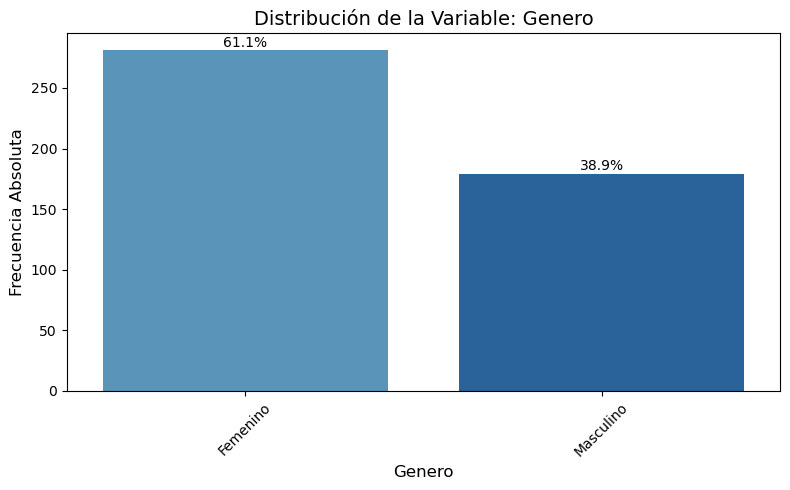
| Genero | Frecuencia Absoluta | Frecuencia Relativa (%) | |
|---|---|---|---|
| 0 | Femenino | 281 | 61.09 |
| 1 | Masculino | 179 | 38.91 |
Escolaridad:#
resumen_categorica(df,"Escolaridad")
C:\Users\Mari\AppData\Local\Temp\ipykernel_22088\2196926812.py:19: FutureWarning:
Passing `palette` without assigning `hue` is deprecated and will be removed in v0.14.0. Assign the `x` variable to `hue` and set `legend=False` for the same effect.
ax = sns.barplot(
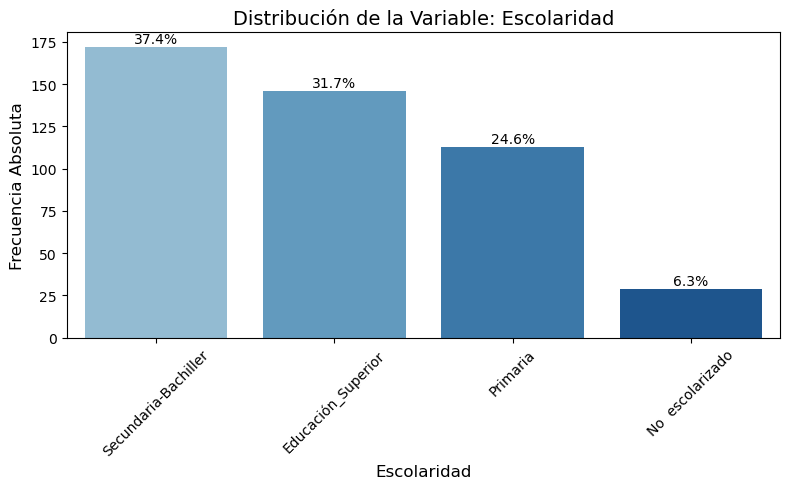
| Escolaridad | Frecuencia Absoluta | Frecuencia Relativa (%) | |
|---|---|---|---|
| 0 | Secundaria-Bachiller | 172 | 37.39 |
| 1 | Educación_Superior | 146 | 31.74 |
| 2 | Primaria | 113 | 24.57 |
| 3 | No escolarizado | 29 | 6.30 |
Regimen_Salud:#
resumen_categorica(df,"Regimen_Salud")
C:\Users\Mari\AppData\Local\Temp\ipykernel_22088\2196926812.py:19: FutureWarning:
Passing `palette` without assigning `hue` is deprecated and will be removed in v0.14.0. Assign the `x` variable to `hue` and set `legend=False` for the same effect.
ax = sns.barplot(
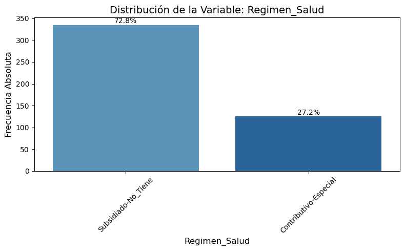
| Regimen_Salud | Frecuencia Absoluta | Frecuencia Relativa (%) | |
|---|---|---|---|
| 0 | Subsidiado-No_Tiene | 335 | 72.83 |
| 1 | Contributivo-Especial | 125 | 27.17 |
Medicacion_Diabetes:#
resumen_categorica(df,"Medicacion_Diabetes")
C:\Users\Mari\AppData\Local\Temp\ipykernel_22088\2196926812.py:19: FutureWarning:
Passing `palette` without assigning `hue` is deprecated and will be removed in v0.14.0. Assign the `x` variable to `hue` and set `legend=False` for the same effect.
ax = sns.barplot(
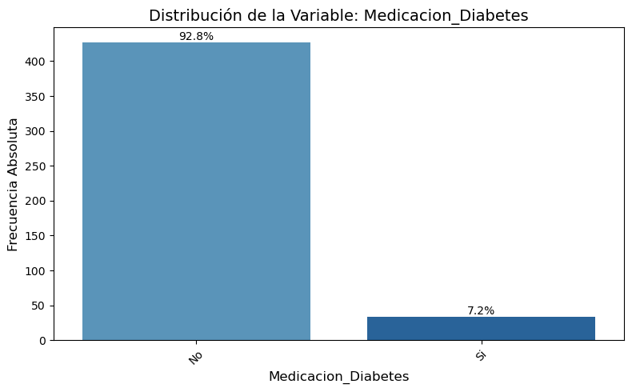
| Medicacion_Diabetes | Frecuencia Absoluta | Frecuencia Relativa (%) | |
|---|---|---|---|
| 0 | No | 427 | 92.83 |
| 1 | Si | 33 | 7.17 |
Diabetes_Embarazo:#
resumen_categorica(df,"Diabetes_Embarazo")
C:\Users\Mari\AppData\Local\Temp\ipykernel_22088\2196926812.py:19: FutureWarning:
Passing `palette` without assigning `hue` is deprecated and will be removed in v0.14.0. Assign the `x` variable to `hue` and set `legend=False` for the same effect.
ax = sns.barplot(
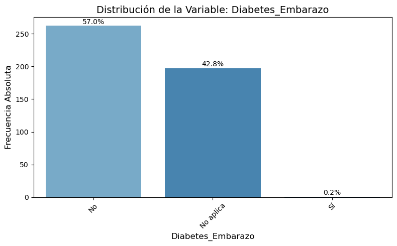
| Diabetes_Embarazo | Frecuencia Absoluta | Frecuencia Relativa (%) | |
|---|---|---|---|
| 0 | No | 262 | 56.96 |
| 1 | No aplica | 197 | 42.83 |
| 2 | Sí | 1 | 0.22 |
Hipertension:#
resumen_categorica(df,"Hipertension")
C:\Users\Mari\AppData\Local\Temp\ipykernel_22088\2196926812.py:19: FutureWarning:
Passing `palette` without assigning `hue` is deprecated and will be removed in v0.14.0. Assign the `x` variable to `hue` and set `legend=False` for the same effect.
ax = sns.barplot(
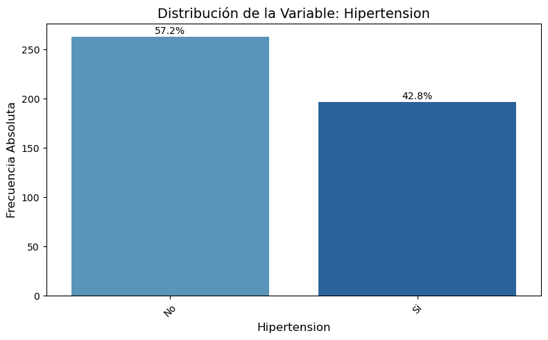
| Hipertension | Frecuencia Absoluta | Frecuencia Relativa (%) | |
|---|---|---|---|
| 0 | No | 263 | 57.17 |
| 1 | Si | 197 | 42.83 |
Medicacion_Hipertension:#
resumen_categorica(df,"Medicacion_Hipertension")
C:\Users\Mari\AppData\Local\Temp\ipykernel_22088\2196926812.py:19: FutureWarning:
Passing `palette` without assigning `hue` is deprecated and will be removed in v0.14.0. Assign the `x` variable to `hue` and set `legend=False` for the same effect.
ax = sns.barplot(
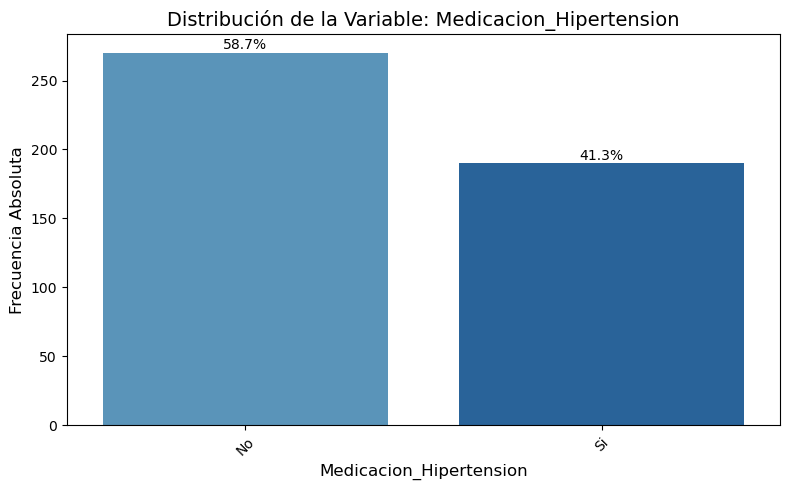
| Medicacion_Hipertension | Frecuencia Absoluta | Frecuencia Relativa (%) | |
|---|---|---|---|
| 0 | No | 270 | 58.7 |
| 1 | Si | 190 | 41.3 |
Colesterol_Alto:#
resumen_categorica(df,"Colesterol_Alto")
C:\Users\Mari\AppData\Local\Temp\ipykernel_22088\2196926812.py:19: FutureWarning:
Passing `palette` without assigning `hue` is deprecated and will be removed in v0.14.0. Assign the `x` variable to `hue` and set `legend=False` for the same effect.
ax = sns.barplot(
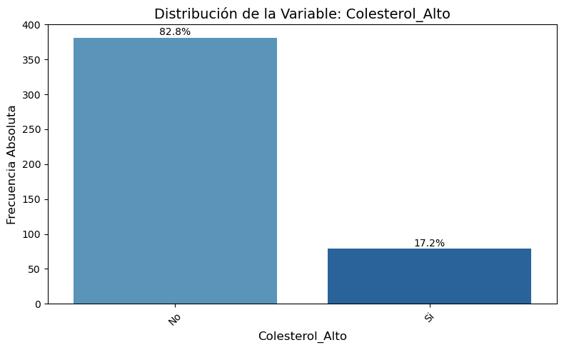
| Colesterol_Alto | Frecuencia Absoluta | Frecuencia Relativa (%) | |
|---|---|---|---|
| 0 | No | 381 | 82.83 |
| 1 | Si | 79 | 17.17 |
Medicacion_Colesterol:#
resumen_categorica(df,"Medicacion_Colesterol")
C:\Users\Mari\AppData\Local\Temp\ipykernel_22088\2196926812.py:19: FutureWarning:
Passing `palette` without assigning `hue` is deprecated and will be removed in v0.14.0. Assign the `x` variable to `hue` and set `legend=False` for the same effect.
ax = sns.barplot(
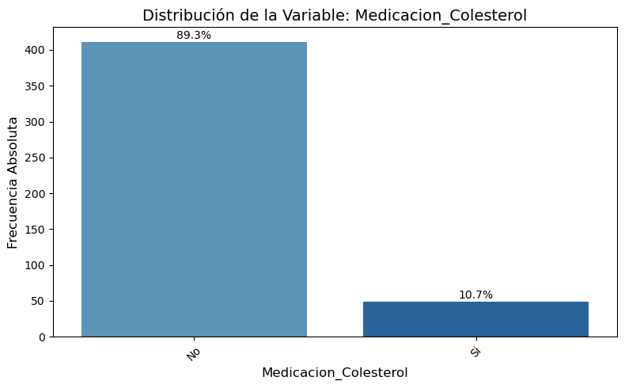
| Medicacion_Colesterol | Frecuencia Absoluta | Frecuencia Relativa (%) | |
|---|---|---|---|
| 0 | No | 411 | 89.35 |
| 1 | Si | 49 | 10.65 |
Insuficiencia_Renal:#
resumen_categorica(df,"Insuficiencia_Renal")
C:\Users\Mari\AppData\Local\Temp\ipykernel_22088\2196926812.py:19: FutureWarning:
Passing `palette` without assigning `hue` is deprecated and will be removed in v0.14.0. Assign the `x` variable to `hue` and set `legend=False` for the same effect.
ax = sns.barplot(
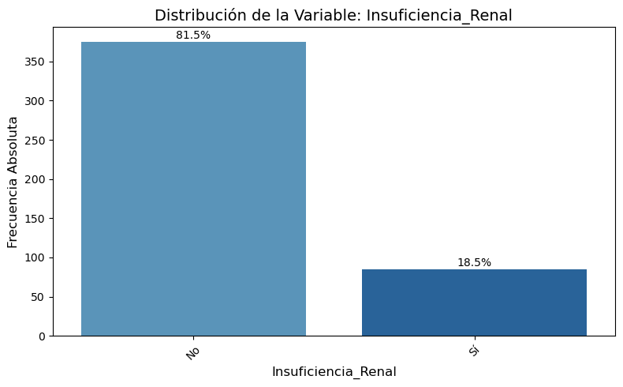
| Insuficiencia_Renal | Frecuencia Absoluta | Frecuencia Relativa (%) | |
|---|---|---|---|
| 0 | No | 375 | 81.52 |
| 1 | Sí | 85 | 18.48 |
Dialisis#
resumen_categorica(df,"Dialisis")
C:\Users\Mari\AppData\Local\Temp\ipykernel_22088\2196926812.py:19: FutureWarning:
Passing `palette` without assigning `hue` is deprecated and will be removed in v0.14.0. Assign the `x` variable to `hue` and set `legend=False` for the same effect.
ax = sns.barplot(
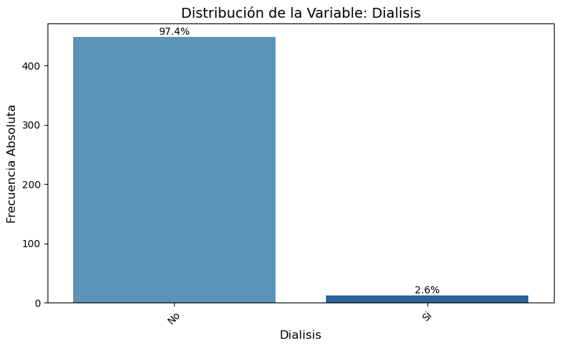
| Dialisis | Frecuencia Absoluta | Frecuencia Relativa (%) | |
|---|---|---|---|
| 0 | No | 448 | 97.39 |
| 1 | Si | 12 | 2.61 |
Proteina_Sangre_Orina#
resumen_categorica(df,"Proteina_Sangre_Orina")
C:\Users\Mari\AppData\Local\Temp\ipykernel_22088\2196926812.py:19: FutureWarning:
Passing `palette` without assigning `hue` is deprecated and will be removed in v0.14.0. Assign the `x` variable to `hue` and set `legend=False` for the same effect.
ax = sns.barplot(
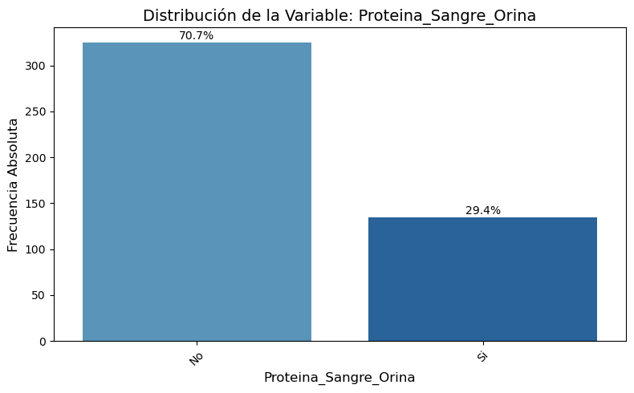
| Proteina_Sangre_Orina | Frecuencia Absoluta | Frecuencia Relativa (%) | |
|---|---|---|---|
| 0 | No | 325 | 70.65 |
| 1 | Si | 135 | 29.35 |
Antecedentes_Familiares:#
resumen_categorica(df,"Antecedentes_Familiares")
C:\Users\Mari\AppData\Local\Temp\ipykernel_22088\2196926812.py:19: FutureWarning:
Passing `palette` without assigning `hue` is deprecated and will be removed in v0.14.0. Assign the `x` variable to `hue` and set `legend=False` for the same effect.
ax = sns.barplot(
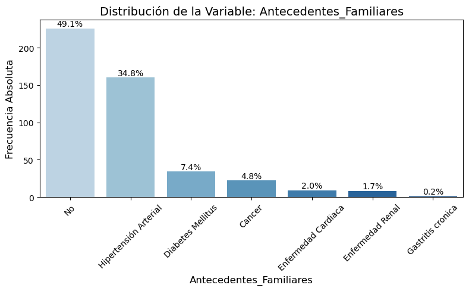
| Antecedentes_Familiares | Frecuencia Absoluta | Frecuencia Relativa (%) | |
|---|---|---|---|
| 0 | No | 226 | 49.13 |
| 1 | Hipertensión Arterial | 160 | 34.78 |
| 2 | Diabetes Mellitus | 34 | 7.39 |
| 3 | Cancer | 22 | 4.78 |
| 4 | Enfermedad Cardiaca | 9 | 1.96 |
| 5 | Enfermedad Renal | 8 | 1.74 |
| 6 | Gastritis cronica | 1 | 0.22 |
Familiar_Insuficiencia_Renal:#
resumen_categorica(df,"Familiar_Insuficiencia_Renal")
C:\Users\Mari\AppData\Local\Temp\ipykernel_22088\2196926812.py:19: FutureWarning:
Passing `palette` without assigning `hue` is deprecated and will be removed in v0.14.0. Assign the `x` variable to `hue` and set `legend=False` for the same effect.
ax = sns.barplot(
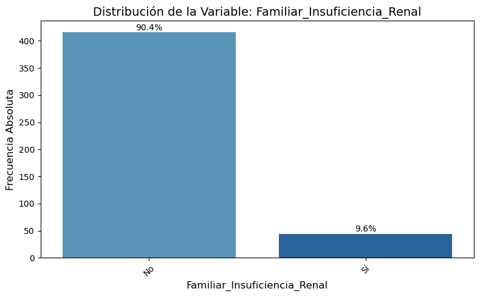
| Familiar_Insuficiencia_Renal | Frecuencia Absoluta | Frecuencia Relativa (%) | |
|---|---|---|---|
| 0 | No | 416 | 90.43 |
| 1 | Sí | 44 | 9.57 |
Familiar_Dialisis:#
resumen_categorica(df,"Familiar_Dialisis")
C:\Users\Mari\AppData\Local\Temp\ipykernel_22088\2196926812.py:19: FutureWarning:
Passing `palette` without assigning `hue` is deprecated and will be removed in v0.14.0. Assign the `x` variable to `hue` and set `legend=False` for the same effect.
ax = sns.barplot(
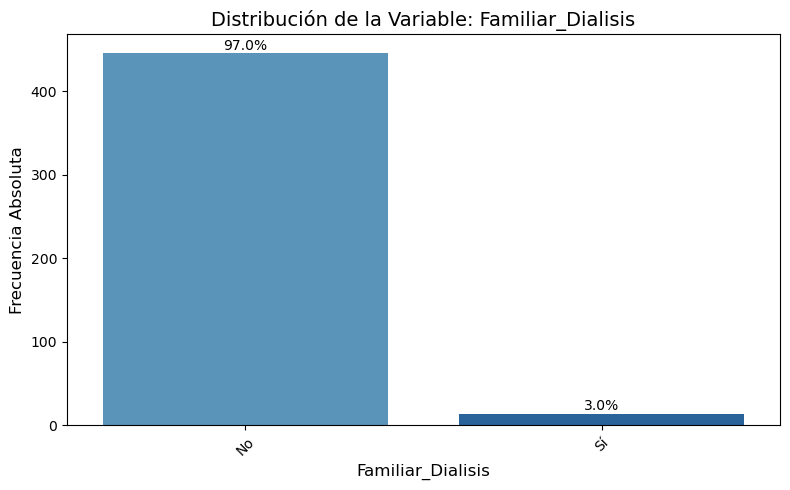
| Familiar_Dialisis | Frecuencia Absoluta | Frecuencia Relativa (%) | |
|---|---|---|---|
| 0 | No | 446 | 96.96 |
| 1 | Sí | 14 | 3.04 |
Creatinina_Alta:#
resumen_categorica(df,"Creatinina_Alta")
C:\Users\Mari\AppData\Local\Temp\ipykernel_22088\2196926812.py:19: FutureWarning:
Passing `palette` without assigning `hue` is deprecated and will be removed in v0.14.0. Assign the `x` variable to `hue` and set `legend=False` for the same effect.
ax = sns.barplot(
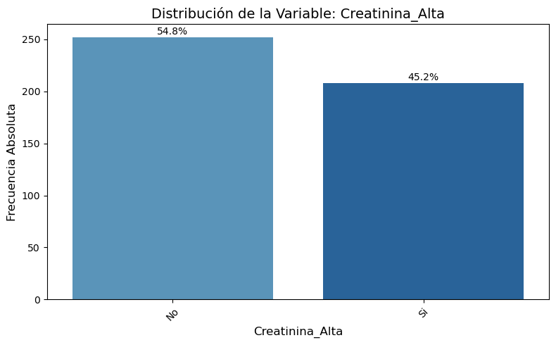
| Creatinina_Alta | Frecuencia Absoluta | Frecuencia Relativa (%) | |
|---|---|---|---|
| 0 | No | 252 | 54.78 |
| 1 | Si | 208 | 45.22 |
Presion_Sistolica_>130 & Presion_Diastolica_>90:#
comparar_categoricas(df,"Presion_Sistolica\t> 130","Presion_Diastolica > 90")
C:\Users\Mari\AppData\Local\Temp\ipykernel_22088\1229603156.py:36: UserWarning: Glyph 9 ( ) missing from font(s) DejaVu Sans.
plt.tight_layout()
C:\Users\Mari\miniconda3\envs\deepl_venv\lib\site-packages\IPython\core\pylabtools.py:152: UserWarning: Glyph 9 ( ) missing from font(s) DejaVu Sans.
fig.canvas.print_figure(bytes_io, **kw)
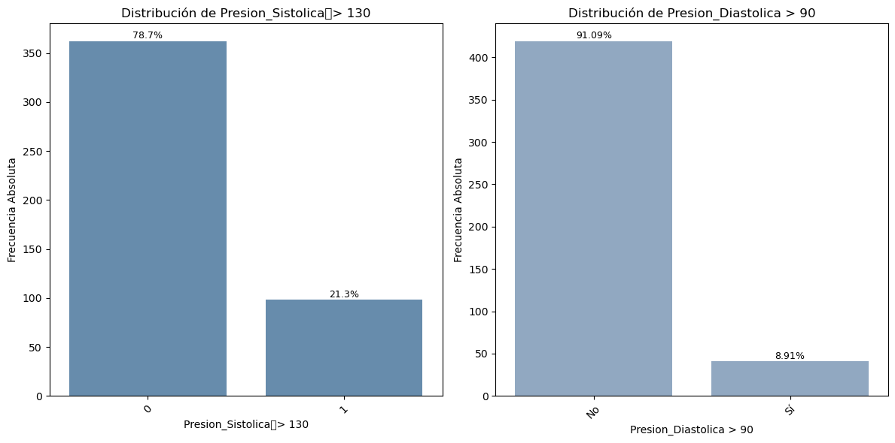
| Presion_Sistolica > 130 | Frecuencia Absoluta | Frecuencia Relativa (%) |
|---|---|---|
| 0 | 362 | 78.7 |
| 1 | 98 | 21.3 |
| Presion_Diastolica > 90 | Frecuencia Absoluta | Frecuencia Relativa (%) |
|---|---|---|
| No | 419 | 91.09 |
| Sí | 41 | 8.91 |
Categoria_IMC#
resumen_categorica(df,"Categoria_IMC")
C:\Users\Mari\AppData\Local\Temp\ipykernel_22088\2196926812.py:19: FutureWarning:
Passing `palette` without assigning `hue` is deprecated and will be removed in v0.14.0. Assign the `x` variable to `hue` and set `legend=False` for the same effect.
ax = sns.barplot(
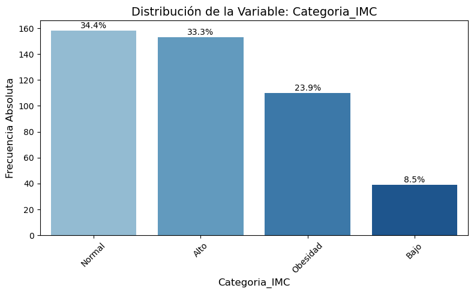
| Categoria_IMC | Frecuencia Absoluta | Frecuencia Relativa (%) | |
|---|---|---|---|
| 0 | Normal | 158 | 34.35 |
| 1 | Alto | 153 | 33.26 |
| 2 | Obesidad | 110 | 23.91 |
| 3 | Bajo | 39 | 8.48 |
Tirilla_Reactiva#
resumen_categorica(df, 'Tirilla_Reactiva')
C:\Users\Mari\AppData\Local\Temp\ipykernel_22088\2196926812.py:19: FutureWarning:
Passing `palette` without assigning `hue` is deprecated and will be removed in v0.14.0. Assign the `x` variable to `hue` and set `legend=False` for the same effect.
ax = sns.barplot(
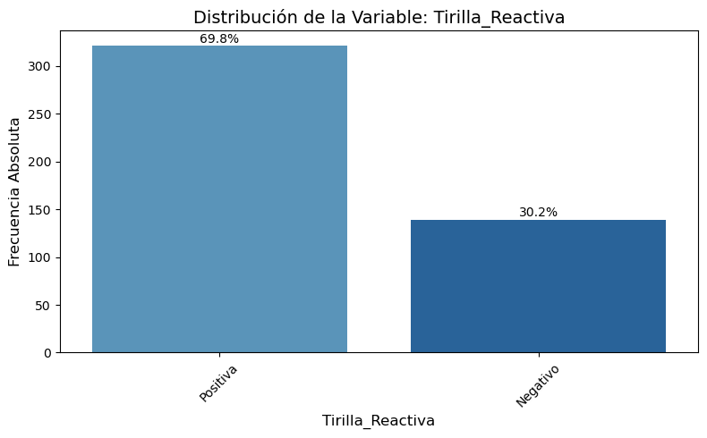
| Tirilla_Reactiva | Frecuencia Absoluta | Frecuencia Relativa (%) | |
|---|---|---|---|
| 0 | Positiva | 321 | 69.78 |
| 1 | Negativo | 139 | 30.22 |
Otras_Categorias:#
variables_categoricas = [
'Consumo_Tabaco', 'Fumador_100Cigs', 'Consumo_Alcohol',
'Frecuencia_Alcohol', 'Consumo_Drogas', 'Trabajo_Cultivo',
'Uso_Insecticidas', 'Uso_Fungicidas', 'Uso_Fertilizantes',
'Proteccion_Pesticidas', 'Metodo_Aplicacion_Pesticidas',
'Consumo_Agua_Trabajo', 'Ultima_Consulta_Medica',
'Dificultad_Atencion_Medica', 'Ultimo_Profesional_Salud',
'Medico_Cabecera', 'Grupo_Sanguineo', 'Transfusion_Sanguinea',
'Sintomas_Recientes', 'Uso_AINES',
'Uso_Medicina_Natural', 'Fuente_Agua',
'Creatinina_Alta', 'Categoria_Talla', 'Categoria_Peso'
]
tablas = matriz_barras_categoricas(df, variables_categoricas, incluir_na=False, ncols=3)
for var, tabla in tablas.items():
print(f"\nTabla de frecuencias: {var}\n")
display(tabla)
C:\Users\Mari\AppData\Local\Temp\ipykernel_22088\273014733.py:31: FutureWarning:
Passing `palette` without assigning `hue` is deprecated and will be removed in v0.14.0. Assign the `x` variable to `hue` and set `legend=False` for the same effect.
sns.barplot(
C:\Users\Mari\AppData\Local\Temp\ipykernel_22088\273014733.py:31: FutureWarning:
Passing `palette` without assigning `hue` is deprecated and will be removed in v0.14.0. Assign the `x` variable to `hue` and set `legend=False` for the same effect.
sns.barplot(
C:\Users\Mari\AppData\Local\Temp\ipykernel_22088\273014733.py:31: FutureWarning:
Passing `palette` without assigning `hue` is deprecated and will be removed in v0.14.0. Assign the `x` variable to `hue` and set `legend=False` for the same effect.
sns.barplot(
C:\Users\Mari\AppData\Local\Temp\ipykernel_22088\273014733.py:31: FutureWarning:
Passing `palette` without assigning `hue` is deprecated and will be removed in v0.14.0. Assign the `x` variable to `hue` and set `legend=False` for the same effect.
sns.barplot(
C:\Users\Mari\AppData\Local\Temp\ipykernel_22088\273014733.py:31: FutureWarning:
Passing `palette` without assigning `hue` is deprecated and will be removed in v0.14.0. Assign the `x` variable to `hue` and set `legend=False` for the same effect.
sns.barplot(
C:\Users\Mari\AppData\Local\Temp\ipykernel_22088\273014733.py:31: FutureWarning:
Passing `palette` without assigning `hue` is deprecated and will be removed in v0.14.0. Assign the `x` variable to `hue` and set `legend=False` for the same effect.
sns.barplot(
C:\Users\Mari\AppData\Local\Temp\ipykernel_22088\273014733.py:31: FutureWarning:
Passing `palette` without assigning `hue` is deprecated and will be removed in v0.14.0. Assign the `x` variable to `hue` and set `legend=False` for the same effect.
sns.barplot(
C:\Users\Mari\AppData\Local\Temp\ipykernel_22088\273014733.py:31: FutureWarning:
Passing `palette` without assigning `hue` is deprecated and will be removed in v0.14.0. Assign the `x` variable to `hue` and set `legend=False` for the same effect.
sns.barplot(
C:\Users\Mari\AppData\Local\Temp\ipykernel_22088\273014733.py:31: FutureWarning:
Passing `palette` without assigning `hue` is deprecated and will be removed in v0.14.0. Assign the `x` variable to `hue` and set `legend=False` for the same effect.
sns.barplot(
C:\Users\Mari\AppData\Local\Temp\ipykernel_22088\273014733.py:31: FutureWarning:
Passing `palette` without assigning `hue` is deprecated and will be removed in v0.14.0. Assign the `x` variable to `hue` and set `legend=False` for the same effect.
sns.barplot(
C:\Users\Mari\AppData\Local\Temp\ipykernel_22088\273014733.py:31: FutureWarning:
Passing `palette` without assigning `hue` is deprecated and will be removed in v0.14.0. Assign the `x` variable to `hue` and set `legend=False` for the same effect.
sns.barplot(
C:\Users\Mari\AppData\Local\Temp\ipykernel_22088\273014733.py:31: FutureWarning:
Passing `palette` without assigning `hue` is deprecated and will be removed in v0.14.0. Assign the `x` variable to `hue` and set `legend=False` for the same effect.
sns.barplot(
C:\Users\Mari\AppData\Local\Temp\ipykernel_22088\273014733.py:31: FutureWarning:
Passing `palette` without assigning `hue` is deprecated and will be removed in v0.14.0. Assign the `x` variable to `hue` and set `legend=False` for the same effect.
sns.barplot(
C:\Users\Mari\AppData\Local\Temp\ipykernel_22088\273014733.py:31: FutureWarning:
Passing `palette` without assigning `hue` is deprecated and will be removed in v0.14.0. Assign the `x` variable to `hue` and set `legend=False` for the same effect.
sns.barplot(
C:\Users\Mari\AppData\Local\Temp\ipykernel_22088\273014733.py:31: FutureWarning:
Passing `palette` without assigning `hue` is deprecated and will be removed in v0.14.0. Assign the `x` variable to `hue` and set `legend=False` for the same effect.
sns.barplot(
C:\Users\Mari\AppData\Local\Temp\ipykernel_22088\273014733.py:31: FutureWarning:
Passing `palette` without assigning `hue` is deprecated and will be removed in v0.14.0. Assign the `x` variable to `hue` and set `legend=False` for the same effect.
sns.barplot(
C:\Users\Mari\AppData\Local\Temp\ipykernel_22088\273014733.py:31: FutureWarning:
Passing `palette` without assigning `hue` is deprecated and will be removed in v0.14.0. Assign the `x` variable to `hue` and set `legend=False` for the same effect.
sns.barplot(
C:\Users\Mari\AppData\Local\Temp\ipykernel_22088\273014733.py:31: FutureWarning:
Passing `palette` without assigning `hue` is deprecated and will be removed in v0.14.0. Assign the `x` variable to `hue` and set `legend=False` for the same effect.
sns.barplot(
C:\Users\Mari\AppData\Local\Temp\ipykernel_22088\273014733.py:31: FutureWarning:
Passing `palette` without assigning `hue` is deprecated and will be removed in v0.14.0. Assign the `x` variable to `hue` and set `legend=False` for the same effect.
sns.barplot(
C:\Users\Mari\AppData\Local\Temp\ipykernel_22088\273014733.py:31: FutureWarning:
Passing `palette` without assigning `hue` is deprecated and will be removed in v0.14.0. Assign the `x` variable to `hue` and set `legend=False` for the same effect.
sns.barplot(
C:\Users\Mari\AppData\Local\Temp\ipykernel_22088\273014733.py:31: FutureWarning:
Passing `palette` without assigning `hue` is deprecated and will be removed in v0.14.0. Assign the `x` variable to `hue` and set `legend=False` for the same effect.
sns.barplot(
C:\Users\Mari\AppData\Local\Temp\ipykernel_22088\273014733.py:31: FutureWarning:
Passing `palette` without assigning `hue` is deprecated and will be removed in v0.14.0. Assign the `x` variable to `hue` and set `legend=False` for the same effect.
sns.barplot(
C:\Users\Mari\AppData\Local\Temp\ipykernel_22088\273014733.py:31: FutureWarning:
Passing `palette` without assigning `hue` is deprecated and will be removed in v0.14.0. Assign the `x` variable to `hue` and set `legend=False` for the same effect.
sns.barplot(
C:\Users\Mari\AppData\Local\Temp\ipykernel_22088\273014733.py:31: FutureWarning:
Passing `palette` without assigning `hue` is deprecated and will be removed in v0.14.0. Assign the `x` variable to `hue` and set `legend=False` for the same effect.
sns.barplot(
C:\Users\Mari\AppData\Local\Temp\ipykernel_22088\273014733.py:31: FutureWarning:
Passing `palette` without assigning `hue` is deprecated and will be removed in v0.14.0. Assign the `x` variable to `hue` and set `legend=False` for the same effect.
sns.barplot(
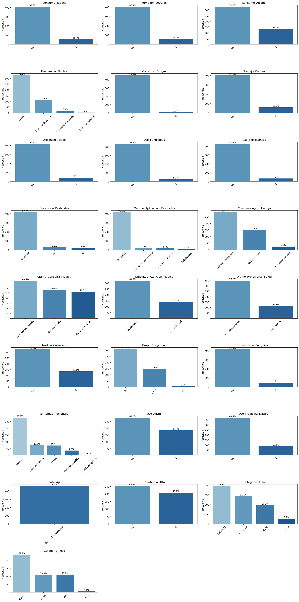
Tabla de frecuencias: Consumo_Tabaco
| Consumo_Tabaco | Frecuencia Absoluta | Frecuencia Relativa (%) | |
|---|---|---|---|
| 0 | No | 407 | 88.48 |
| 1 | Si | 53 | 11.52 |
Tabla de frecuencias: Fumador_100Cigs
| Fumador_100Cigs | Frecuencia Absoluta | Frecuencia Relativa (%) | |
|---|---|---|---|
| 0 | No | 402 | 87.39 |
| 1 | Si | 58 | 12.61 |
Tabla de frecuencias: Consumo_Alcohol
| Consumo_Alcohol | Frecuencia Absoluta | Frecuencia Relativa (%) | |
|---|---|---|---|
| 0 | No | 327 | 71.09 |
| 1 | Si | 133 | 28.91 |
Tabla de frecuencias: Frecuencia_Alcohol
| Frecuencia_Alcohol | Frecuencia Absoluta | Frecuencia Relativa (%) | |
|---|---|---|---|
| 0 | Nunca | 327 | 71.09 |
| 1 | Consumo_Ocasional | 113 | 24.57 |
| 2 | Consumo_Frecuente | 18 | 3.91 |
| 3 | Consumo_Habitual | 2 | 0.43 |
Tabla de frecuencias: Consumo_Drogas
| Consumo_Drogas | Frecuencia Absoluta | Frecuencia Relativa (%) | |
|---|---|---|---|
| 0 | No | 452 | 98.26 |
| 1 | Si | 8 | 1.74 |
Tabla de frecuencias: Trabajo_Cultivo
| Trabajo_Cultivo | Frecuencia Absoluta | Frecuencia Relativa (%) | |
|---|---|---|---|
| 0 | No | 402 | 87.39 |
| 1 | Si | 58 | 12.61 |
Tabla de frecuencias: Uso_Insecticidas
| Uso_Insecticidas | Frecuencia Absoluta | Frecuencia Relativa (%) | |
|---|---|---|---|
| 0 | No | 418 | 90.87 |
| 1 | Si | 42 | 9.13 |
Tabla de frecuencias: Uso_Fungicidas
| Uso_Fungicidas | Frecuencia Absoluta | Frecuencia Relativa (%) | |
|---|---|---|---|
| 0 | No | 436 | 94.78 |
| 1 | Si | 24 | 5.22 |
Tabla de frecuencias: Uso_Fertilizantes
| Uso_Fertilizantes | Frecuencia Absoluta | Frecuencia Relativa (%) | |
|---|---|---|---|
| 0 | No | 427 | 92.83 |
| 1 | Si | 33 | 7.17 |
Tabla de frecuencias: Proteccion_Pesticidas
| Proteccion_Pesticidas | Frecuencia Absoluta | Frecuencia Relativa (%) | |
|---|---|---|---|
| 0 | No aplica | 414 | 90.00 |
| 1 | No | 28 | 6.09 |
| 2 | Si | 18 | 3.91 |
Tabla de frecuencias: Metodo_Aplicacion_Pesticidas
| Metodo_Aplicacion_Pesticidas | Frecuencia Absoluta | Frecuencia Relativa (%) | |
|---|---|---|---|
| 0 | No aplica | 414 | 90.00 |
| 1 | Pulverizador de mochila | 21 | 4.57 |
| 2 | Pulverizador manual | 16 | 3.48 |
| 3 | Nebulizador | 9 | 1.96 |
Tabla de frecuencias: Consumo_Agua_Trabajo
| Consumo_Agua_Trabajo | Frecuencia Absoluta | Frecuencia Relativa (%) | |
|---|---|---|---|
| 0 | Consumo adecuado | 284 | 61.74 |
| 1 | No toma nada | 151 | 32.83 |
| 2 | Consumo elevado | 25 | 5.43 |
Tabla de frecuencias: Ultima_Consulta_Medica
| Ultima_Consulta_Medica | Frecuencia Absoluta | Frecuencia Relativa (%) | |
|---|---|---|---|
| 0 | Atención intermedia | 187 | 40.65 |
| 1 | Atención tardía | 141 | 30.65 |
| 2 | Atención reciente | 132 | 28.70 |
Tabla de frecuencias: Dificultad_Atencion_Medica
| Dificultad_Atencion_Medica | Frecuencia Absoluta | Frecuencia Relativa (%) | |
|---|---|---|---|
| 0 | Sin dificultad | 320 | 69.57 |
| 1 | Con dificultad | 140 | 30.43 |
Tabla de frecuencias: Ultimo_Profesional_Salud
| Ultimo_Profesional_Salud | Frecuencia Absoluta | Frecuencia Relativa (%) | |
|---|---|---|---|
| 0 | Medicina General | 346 | 75.22 |
| 1 | Especialista | 114 | 24.78 |
Tabla de frecuencias: Medico_Cabecera
| Medico_Cabecera | Frecuencia Absoluta | Frecuencia Relativa (%) | |
|---|---|---|---|
| 0 | No | 326 | 70.87 |
| 1 | Si | 134 | 29.13 |
Tabla de frecuencias: Grupo_Sanguineo
| Grupo_Sanguineo | Frecuencia Absoluta | Frecuencia Relativa (%) | |
|---|---|---|---|
| 0 | O+ | 308 | 66.96 |
| 1 | No O | 147 | 31.96 |
| 2 | O- | 5 | 1.09 |
Tabla de frecuencias: Transfusion_Sanguinea
| Transfusion_Sanguinea | Frecuencia Absoluta | Frecuencia Relativa (%) | |
|---|---|---|---|
| 0 | No | 415 | 90.22 |
| 1 | Sí | 45 | 9.78 |
Tabla de frecuencias: Sintomas_Recientes
| Sintomas_Recientes | Frecuencia Absoluta | Frecuencia Relativa (%) | |
|---|---|---|---|
| 0 | Ninguno | 277 | 60.22 |
| 1 | Dolor de cabeza | 73 | 15.87 |
| 2 | Fatiga | 72 | 15.65 |
| 3 | Dolor de espalda | 35 | 7.61 |
| 4 | Pérdida de apetito | 3 | 0.65 |
Tabla de frecuencias: Uso_AINES
| Uso_AINES | Frecuencia Absoluta | Frecuencia Relativa (%) | |
|---|---|---|---|
| 0 | No | 277 | 60.22 |
| 1 | Si | 183 | 39.78 |
Tabla de frecuencias: Uso_Medicina_Natural
| Uso_Medicina_Natural | Frecuencia Absoluta | Frecuencia Relativa (%) | |
|---|---|---|---|
| 0 | No | 370 | 80.43 |
| 1 | Si | 90 | 19.57 |
Tabla de frecuencias: Fuente_Agua
| Fuente_Agua | Frecuencia Absoluta | Frecuencia Relativa (%) | |
|---|---|---|---|
| 0 | Suministro municipal | 460 | 100.0 |
Tabla de frecuencias: Creatinina_Alta
| Creatinina_Alta | Frecuencia Absoluta | Frecuencia Relativa (%) | |
|---|---|---|---|
| 0 | No | 252 | 54.78 |
| 1 | Si | 208 | 45.22 |
Tabla de frecuencias: Categoria_Talla
| Categoria_Talla | Frecuencia Absoluta | Frecuencia Relativa (%) | |
|---|---|---|---|
| 0 | 1.61-1.70 | 195 | 42.39 |
| 1 | 1.50-1.60 | 143 | 31.09 |
| 2 | >1.70 | 96 | 20.87 |
| 3 | <1.50 | 26 | 5.65 |
Tabla de frecuencias: Categoria_Peso
| Categoria_Peso | Frecuencia Absoluta | Frecuencia Relativa (%) | |
|---|---|---|---|
| 0 | 61-80 | 235 | 51.09 |
| 1 | 41-60 | 110 | 23.91 |
| 2 | >80 | 110 | 23.91 |
| 3 | <40 | 5 | 1.09 |
Análisis Bivariado:#
Numéricas Vs Numéricas:#
Hacemos uso de Spearman dado que es más robusto para variables que presentan outliers, los datos no siguen una normal, además de ser ampliamente usado en datos clínicos.
corr_spearman = df[nombre_var_num].corr(method="spearman")
corr_spearman
| Edad | Peso | Talla | IMC | Creatinina | TFG_CDK_EPI | TFG_Edad | Presion_Sistolica | Presion_Diastolica | |
|---|---|---|---|---|---|---|---|---|---|
| Edad | 1.000000 | -0.130544 | -0.102341 | -0.092961 | -0.043826 | -0.184492 | -1.000000 | 0.363844 | 0.248753 |
| Peso | -0.130544 | 1.000000 | 0.103190 | 0.884057 | -0.036664 | 0.049440 | 0.130544 | -0.036037 | -0.061917 |
| Talla | -0.102341 | 0.103190 | 1.000000 | -0.326983 | 0.041716 | -0.002910 | 0.102341 | 0.021489 | -0.056053 |
| IMC | -0.092961 | 0.884057 | -0.326983 | 1.000000 | -0.044908 | 0.047725 | 0.092961 | -0.061568 | -0.036111 |
| Creatinina | -0.043826 | -0.036664 | 0.041716 | -0.044908 | 1.000000 | -0.855228 | 0.043826 | -0.007923 | -0.062426 |
| TFG_CDK_EPI | -0.184492 | 0.049440 | -0.002910 | 0.047725 | -0.855228 | 1.000000 | 0.184492 | -0.056570 | 0.060186 |
| TFG_Edad | -1.000000 | 0.130544 | 0.102341 | 0.092961 | 0.043826 | 0.184492 | 1.000000 | -0.363844 | -0.248753 |
| Presion_Sistolica | 0.363844 | -0.036037 | 0.021489 | -0.061568 | -0.007923 | -0.056570 | -0.363844 | 1.000000 | 0.574316 |
| Presion_Diastolica | 0.248753 | -0.061917 | -0.056053 | -0.036111 | -0.062426 | 0.060186 | -0.248753 | 0.574316 | 1.000000 |
plt.figure(figsize=(10, 8))
sns.heatmap(
corr_spearman,
annot=True,
cmap="Blues",
fmt=".2f",
linewidths=0.5,
square=True,
cbar_kws={"shrink": 0.8}
)
plt.title("Matriz de Correlación de Spearman", fontsize=14)
plt.xticks(rotation=45, ha="right")
plt.yticks(rotation=0)
plt.tight_layout()
plt.show()
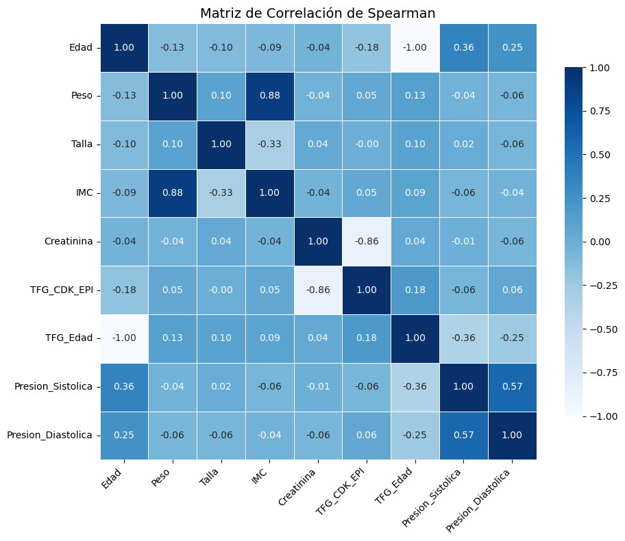
Correlaciones Negativas:
TFG_EDAD-Edad= -1 (Fuerte)IMC-Talla= -0.34 (Leve)TFG_CDK_EPI-Edad= -0.21 (Leve)TFG_CDK_EPI-Creatinina= -0.85 (Fuerte)
Correlaciones Positivas:
Presion_Sistolica-Presion_Diastolica= 0.58 (Moderada)Presion_Sitolica-Edad= 0.38 (Leve)Presion_Diatolica-Edad=0.27 (Leve)Peso-IMC= 0.88 (Fuerte)
Correlaciones Negativas:#
TFG_EDAD & Edad#
grafico_dispersion(df,"Edad","TFG_Edad",metodo_corr="spearman")
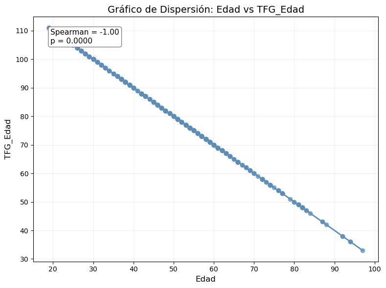
(-1.0, 0.0)
La correlación observada resulta coherente y esperable, considerando que la Edad probablemente forma parte de las variables empleadas en el cálculo de la tasa de filtración glomerular.
IMC & Talla#
grafico_dispersion(df,"IMC","Talla",metodo_corr="spearman")
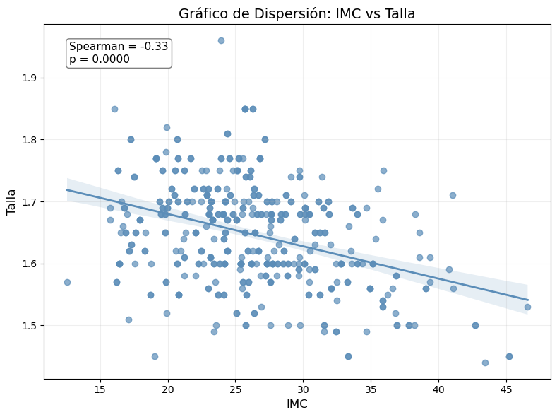
(-0.32698315351112966, 6.357767918397587e-13)
Se observa una correlación negativa débil a moderada entre la talla y el IMC (rho = -0.339), indicando que a medida que aumenta la talla, el IMC tiende a disminuir. Esta relación resulta estadísticamente significativa (p < 0.001) y es esperable, dado que la talla hace parte de la fórmula de cálculo del índice de masa corporal.
TFG_CDK_EPI & EDAD:#
grafico_dispersion(df, "Edad", "TFG_CDK_EPI", metodo_corr="spearman")
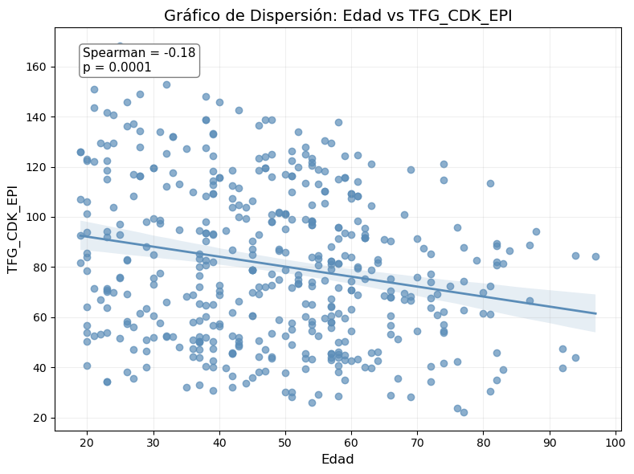
(-0.1844920439300773, 6.880908417473684e-05)
Se observa una correlación negativa débil entre la Edad y la TFG_CDK_EPI (rho = -0.207), indicando que a medida que aumenta la edad, la tasa de filtración glomerular tiende a disminuir. Esta relación resulta estadísticamente significativa (p < 0.001) y es clínicamente coherente, dado que la función renal suele disminuir con el envejecimiento.
TFG_CDK_EPI & Creatinina:#
grafico_dispersion(df, "Creatinina", "TFG_CDK_EPI", metodo_corr="spearman")
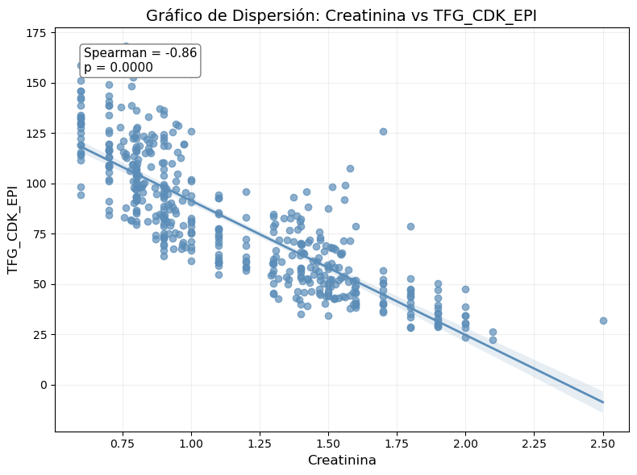
(-0.8552284991903971, 7.911755801773441e-133)
La Creatinina y la TFG_CDK_EPI presentan una correlación negativa muy fuerte y estadísticamente significativa (rho = -0.846; p < 0.001), lo que evidencia que valores más altos de creatinina se asocian con menores tasas de filtración glomerular. Esta relación es tanto clínicamente plausible como metodológicamente esperable, dado que la creatinina interviene directamente en el cálculo de la TFG estimada.
Correlaciones Positivas:#
Presion_Sistolica & Presion_Diastolica:#
grafico_dispersion(df, "Presion_Sistolica", "Presion_Diastolica", metodo_corr="spearman")
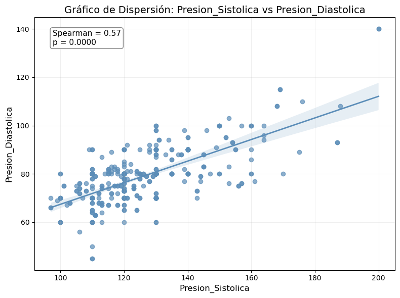
(0.5743161518245263, 1.0121405167731026e-41)
Se observa una correlación positiva moderada entre la Presión Sistólica y la Presión Diastólica, indicando que a mayores valores de presión sistólica tienden a presentarse también mayores valores de presión diastólica. Esta relación resulta estadísticamente significativa y es clínicamente esperable, dado que ambas variables hacen parte de la medición de la presión arterial.
Presion_Siatolica & Edad:#
grafico_dispersion(df, "Presion_Sistolica", "Edad", metodo_corr="spearman")
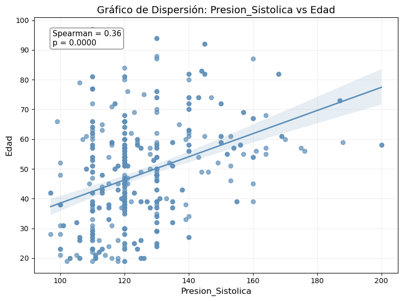
(0.3638435845334069, 7.613675182752562e-16)
La Edad y la Presión Sistólica presentan una correlación positiva estadísticamente significativa (rho = 0.380; p < 0.001), lo que sugiere que los individuos de mayor edad tienden a registrar valores más altos de presión sistólica. Este hallazgo es consistente con la fisiología cardiovascular, considerando que la rigidez arterial y otros cambios hemodinámicos asociados al envejecimiento pueden contribuir al aumento de la presión arterial.
Presion_Diastolica & Edad#
grafico_dispersion(df, "Presion_Diastolica", "Edad", metodo_corr="spearman")
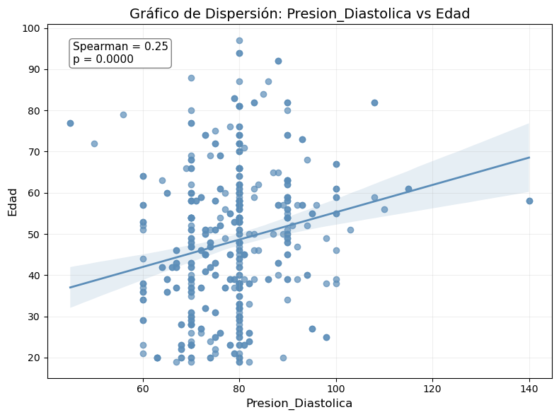
(0.24875282282478128, 6.450525249497324e-08)
La Edad y la Presión Diastólica presentan una correlación positiva débil y estadísticamente significativa (rho = 0.266; p < 0.001), lo que sugiere una asociación directa de baja magnitud entre ambas variables. Este hallazgo es coherente desde el punto de vista clínico, aunque menos marcado que el observado entre la Edad y la Presión Sistólica, lo cual puede explicarse por el diferente comportamiento hemodinámico de ambos componentes de la presión arterial con el envejecimiento.
Peso & IMC:#
grafico_dispersion(df, "Peso", "IMC", metodo_corr="spearman")
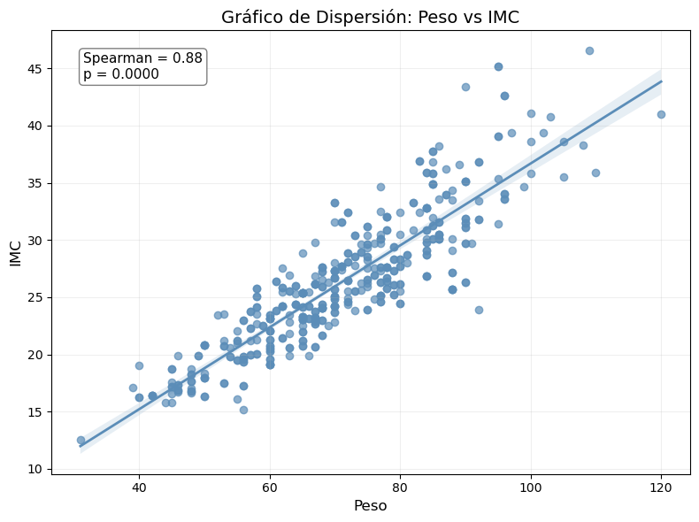
(0.8840574469194113, 2.1512918519256775e-153)
Se observa una correlación positiva muy fuerte entre el Peso y el IMC (rho = 0.883), indicando que a medida que aumenta el peso, el índice de masa corporal también tiende a incrementarse de forma marcada. Esta relación resulta estadísticamente significativa (p < 0.001) y era esperable, dado que el peso constituye uno de los componentes directos en la fórmula de cálculo del IMC.
Categóricas Vs Categóricas:#
import pandas as pd
import numpy as np
import seaborn as sns
import matplotlib.pyplot as plt
from scipy.stats import chi2_contingency
nombre_var_cat = nombre_var_cat.drop("GRUPO")
matriz_v, matriz_p, tabla_asociaciones = matriz_asociacion_categoricas(df, nombre_var_cat,figsize=(24,24), annot=True)
C:\Users\Mari\miniconda3\envs\deepl_venv\lib\site-packages\seaborn\utils.py:61: UserWarning: Glyph 9 ( ) missing from font(s) DejaVu Sans.
fig.canvas.draw()
C:\Users\Mari\miniconda3\envs\deepl_venv\lib\site-packages\IPython\core\pylabtools.py:152: UserWarning: Glyph 9 ( ) missing from font(s) DejaVu Sans.
fig.canvas.print_figure(bytes_io, **kw)
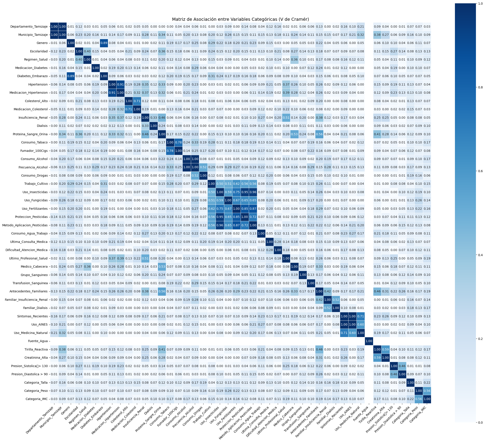
---------------------------------------------------------------------------
NameError Traceback (most recent call last)
Cell In[151], line 1
----> 1 matriz_v, matriz_p, tabla_asociaciones = matriz_asociacion_categoricas(df, nombre_var_cat,figsize=(24,24), annot=True)
Cell In[7], line 51, in matriz_asociacion_categoricas(df, variables, figsize, annot)
48 plt.show()
50 tabla_asociaciones = pd.DataFrame(resultados, columns=["Variable_1", "Variable_2", "V_Cramer", "p_valor"])
---> 51 tabla_asociaciones = TFG_asociaciones.sort_values(by="V_Cramer", ascending=False).reset_index(drop=True)
53 return matriz_v, matriz_p, tabla_asociaciones
NameError: name 'TFG_asociaciones' is not defined
tabla_asociaciones.head(20)
| Variable_1 | Variable_2 | V_Cramer | p_valor | |
|---|---|---|---|---|
| 0 | Departamento_Tamizaje | Municipio_Tamizaje | 1.000000 | 2.379751e-99 |
| 1 | Sintomas_Recientes | Uso_AINES | 1.000000 | 2.059248e-100 |
| 2 | Consumo_Alcohol | Frecuencia_Alcohol | 1.000000 | 1.512540e-101 |
| 3 | Uso_Insecticidas | Metodo_Aplicacion_Pesticidas | 0.957388 | 4.714655e-93 |
| 4 | Uso_Insecticidas | Proteccion_Pesticidas | 0.955219 | 7.529340e-94 |
| 5 | Hipertension | Medicacion_Hipertension | 0.912868 | 3.594107e-87 |
| 6 | Genero | Diabetes_Embarazo | 0.871125 | 3.560194e-78 |
| 7 | Uso_Fertilizantes | Metodo_Aplicacion_Pesticidas | 0.866181 | 4.026390e-76 |
| 8 | Uso_Fertilizantes | Proteccion_Pesticidas | 0.856732 | 1.229340e-75 |
| 9 | Consumo_Tabaco | Fumador_100Cigs | 0.776338 | 1.456231e-63 |
| 10 | Uso_Insecticidas | Uso_Fertilizantes | 0.757409 | 1.370296e-60 |
| 11 | Proteccion_Pesticidas | Metodo_Aplicacion_Pesticidas | 0.718939 | 9.336560e-102 |
| 12 | Colesterol_Alto | Medicacion_Colesterol | 0.712435 | 8.124491e-54 |
| 13 | Sintomas_Recientes | Uso_Medicina_Natural | 0.709890 | 4.416386e-50 |
| 14 | Uso_Fungicidas | Uso_Fertilizantes | 0.693577 | 4.239927e-51 |
| 15 | Uso_Fungicidas | Metodo_Aplicacion_Pesticidas | 0.666749 | 4.933688e-45 |
| 16 | Uso_Fungicidas | Proteccion_Pesticidas | 0.662097 | 1.819687e-45 |
| 17 | Trabajo_Cultivo | Uso_Fertilizantes | 0.632205 | 9.363449e-43 |
| 18 | Uso_Insecticidas | Uso_Fungicidas | 0.609182 | 8.020867e-40 |
| 19 | Uso_AINES | Uso_Medicina_Natural | 0.601202 | 7.864877e-39 |
Los resultados muestran una relación casi perfecta entre varias de las variables analizadas, donde el uso de medicamentos como los AINES está directamente ligado a la presencia de síntomas recientes, y el consumo de alcohol a su frecuencia reportada. Se observa una coherencia muy alta (superior al 90%) entre tener un diagnóstico de hipertensión y recibir medicación para ello, así como una relación lógica y fuerte en las prácticas de fumadores y el uso de agroquímicos con sus respectivos métodos de protección. Con p-valores prácticamente en cero, queda claro que estas asociaciones son sólidas y que el perfil de salud de los pacientes está estrechamente amarrado a sus hábitos y exposiciones ambientales.
p_val = prueba_chi_cuadrado(df, 'Medico_Cabecera', 'Regimen_Salud')
=== PRUEBA CHI-CUADRADO: Medico_Cabecera vs Regimen_Salud ===
Estadístico Chi2: 56.5247
p-valor: 5.5495e-14
Grados de libertad: 1
----------------------------------------
Existe una RELACIÓN significativa entre las variables (p < 0.05).
--- Tabla de Frecuencias Observadas (Porcentaje por Columna) ---
| Regimen_Salud | Contributivo-Especial | Subsidiado-No_Tiene |
|---|---|---|
| Medico_Cabecera | ||
| No | 55 (44.0%) | 277 (80.3%) |
| Si | 70 (56.0%) | 68 (19.7%) |
Los resultados demuestran una desigualdad significativa en el acceso a la salud, donde el contar con un médico de cabecera está condicionado por el tipo de afiliación al sistema (\(p < 0.05\)). Se observa que, mientras en el Régimen Contributivo-Especial la mayoría de los usuarios dispone de este servicio, en el Régimen Subsidiado-No Tiene la situación se invierte, con un 80% de la población (277 personas) careciendo de una atención primaria continua.
p_val = prueba_chi_cuadrado(df, 'Medico_Cabecera', 'Ultima_Consulta_Medica')
=== PRUEBA CHI-CUADRADO: Medico_Cabecera vs Ultima_Consulta_Medica ===
Estadístico Chi2: 15.4941
p-valor: 4.3202e-04
Grados de libertad: 2
----------------------------------------
Existe una RELACIÓN significativa entre las variables (p < 0.05).
--- Tabla de Frecuencias Observadas (Porcentaje por Columna) ---
| Ultima_Consulta_Medica | Atención intermedia | Atención reciente | Atención tardía |
|---|---|---|---|
| Medico_Cabecera | |||
| No | 128 (66.3%) | 86 (63.7%) | 118 (83.1%) |
| Si | 65 (33.7%) | 49 (36.3%) | 24 (16.9%) |
Se observa que los pacientes que disponen de un médico de cabecera presentan una mayor proporción de atención reciente o intermedia, mientras que la ausencia de esta figura clínica está estrechamente vinculada a la atención tardía, concentrando 118 de los 142 casos registrados en dicha categoría.
p_val = prueba_chi_cuadrado(df, 'Regimen_Salud', 'Dificultad_Atencion_Medica')
=== PRUEBA CHI-CUADRADO: Regimen_Salud vs Dificultad_Atencion_Medica ===
Estadístico Chi2: 9.4276
p-valor: 2.1375e-03
Grados de libertad: 1
----------------------------------------
Existe una RELACIÓN significativa entre las variables (p < 0.05).
--- Tabla de Frecuencias Observadas (Porcentaje por Columna) ---
| Dificultad_Atencion_Medica | Con dificultad | Sin dificultad |
|---|---|---|
| Regimen_Salud | ||
| Contributivo-Especial | 24 (16.8%) | 101 (30.9%) |
| Subsidiado-No_Tiene | 119 (83.2%) | 226 (69.1%) |
Se evidencia que el Régimen Subsidiado-No Tiene concentra la gran mayoría de los reportes de obstrucción en el servicio, representando el 83.2% de los casos identificados “Con dificultad”, frente a solo un 16.8% en el Régimen Contributivo-Especial.
p_val = prueba_chi_cuadrado(df, 'Medico_Cabecera', 'Dificultad_Atencion_Medica')
=== PRUEBA CHI-CUADRADO: Medico_Cabecera vs Dificultad_Atencion_Medica ===
Estadístico Chi2: 0.0115
p-valor: 9.1458e-01
Grados de libertad: 1
----------------------------------------
NO hay evidencia de relación. Las variables son independientes.
--- Tabla de Frecuencias Observadas (Porcentaje por Columna) ---
| Dificultad_Atencion_Medica | Con dificultad | Sin dificultad |
|---|---|---|
| Medico_Cabecera | ||
| No | 102 (71.3%) | 230 (70.3%) |
| Si | 41 (28.7%) | 97 (29.7%) |
Las proporciones de pacientes con y sin dificultad son prácticamente idénticas independientemente de si disponen de un médico de cabecera, con variaciones menores al 1% entre los grupos (71.3% frente a 70.3% en la categoría “No”).
p_val = prueba_chi_cuadrado(df, 'Medico_Cabecera', 'Ultimo_Profesional_Salud')
=== PRUEBA CHI-CUADRADO: Medico_Cabecera vs Ultimo_Profesional_Salud ===
Estadístico Chi2: 2.7577
p-valor: 9.6789e-02
Grados de libertad: 1
----------------------------------------
NO hay evidencia de relación. Las variables son independientes.
--- Tabla de Frecuencias Observadas (Porcentaje por Columna) ---
| Ultimo_Profesional_Salud | Especialista | Medicina General |
|---|---|---|
| Medico_Cabecera | ||
| No | 73 (64.0%) | 259 (72.8%) |
| Si | 41 (36.0%) | 97 (27.2%) |
Los resultados de la prueba Chi-cuadrado indican que no existe una relación estadísticamente significativa entre contar con un médico de cabecera y el tipo de profesional de salud consultado por última vez (\(p > 0.05\)). Aunque se observa una participación ligeramente mayor de especialistas en el grupo que sí tiene médico de cabecera (36.0% frente al 27.2% en medicina general), la diferencia no es lo suficientemente robusta para descartar que sea producto del azar.
p_val = prueba_chi_cuadrado(df, 'Regimen_Salud', 'Insuficiencia_Renal')
=== PRUEBA CHI-CUADRADO: Regimen_Salud vs Insuficiencia_Renal ===
Estadístico Chi2: 5.8189
p-valor: 1.5855e-02
Grados de libertad: 1
----------------------------------------
Existe una RELACIÓN significativa entre las variables (p < 0.05).
--- Tabla de Frecuencias Observadas (Porcentaje por Columna) ---
| Insuficiencia_Renal | No | Sí |
|---|---|---|
| Regimen_Salud | ||
| Contributivo-Especial | 93 (24.2%) | 32 (37.6%) |
| Subsidiado-No_Tiene | 292 (75.8%) | 53 (62.4%) |
Se observa que, aunque el Régimen Subsidiado-No Tiene concentra la mayor cantidad absoluta de casos positivos debido a su mayor peso en la muestra, el Régimen Contributivo-Especial presenta una proporción relativa más alta de pacientes con la condición (37.6%) frente a quienes no la padecen (24.2%).
Calidad del dato:#
IMC
bins = [0, 19.99, 24.99, 29.99, np.inf]
labels = ["Bajo <19.99", "Normal 20-24.99", "Alto 25-29.99", "Obesidad >30"]
df["Clasificacion_IMC_CAL"] = pd.cut(df["IMC_CAL"], bins=bins, labels=labels)
tabla = tabla_frecuencias_comparada(df, 'Clasificacion_IMC_CAL', df_agrupado, 'Categoria_IMC', "IMC calculado", "IMC de la base de datos")
tabla
| Frec. Absoluta | Frec. Relativa (%) | ||
|---|---|---|---|
| Variable / Origen | Categoría | ||
| IMC calculado (Clasificacion_IMC_CAL) | Alto 25-29.99 | 156 | 33.19 |
| Normal 20-24.99 | 134 | 28.51 | |
| Obesidad >30 | 112 | 23.83 | |
| Bajo <19.99 | 68 | 14.47 | |
| IMC de la base de datos (Categoria_IMC) | Normal | 160 | 34.04 |
| Alto | 157 | 33.40 | |
| Obesidad | 112 | 23.83 | |
| Bajo | 41 | 8.72 |
La frecuencia de las categorías difieren ligeramente, aunque anteriormente se demostró que las distribuciones no son significativamente diferentes.
TFG_CAL:
def tabla_cruzada_estilo(df, fila, columna):
absoluta = pd.crosstab(df[fila], df[columna])
relativa = pd.crosstab(df[fila], df[columna], normalize='columns') * 100
tabla_final = absoluta.copy().astype(str)
for col in absoluta.columns:
tabla_final[col] = (
absoluta[col].astype(str) +
" (" + relativa[col].map('{:.1f}'.format) + "%)"
)
return tabla_final
mi_tabla = tabla_cruzada_estilo(df, "Estadio_ERC_CAL", "Insuficiencia_Renal")
mi_tabla
| Insuficiencia_Renal | No | Sí |
|---|---|---|
| Estadio_ERC_CAL | ||
| G4: Descenso Grave (15-29) | 2 (0.5%) | 2 (2.4%) |
| G3b: Descenso Moderado-Grave (30-44) | 53 (13.8%) | 21 (24.7%) |
| G3a: Descenso Leve-Moderado (45-59) | 80 (20.8%) | 24 (28.2%) |
| G2: Descenso Leve (60-89) | 127 (33.0%) | 22 (25.9%) |
| G1: Normal o Elevado (≥90) | 123 (31.9%) | 16 (18.8%) |
Note que la TFG calculada no coincide con la clasificación de la variable insuficiencia renal, debido a que esta condición ocurre en pacientes con una TFG<60, y enla tabla se muestra que aproximadamente el 44.7% de los pacientes con TFG>60 tiene insuficienci renal. Por lo que se crea una nueva variable para clasificar la insuficiencia renal.
import pandas as pd
def clasificar_insuficiencia(tfg):
if pd.isna(tfg):
return "Sin dato"
elif tfg < 60:
return "Sí"
else:
return "No"
df["Insuficiencia_Renal_CAL"] = df["TFG_CDK_EPI_CAL"].apply(clasificar_insuficiencia)
resumen_var_cat(df['Insuficiencia_Renal_CAL'])
| Categorías | Conteo | Porcentaje | |
|---|---|---|---|
| 0 | No | 288 | 61.280000 |
| 1 | Sí | 182 | 38.720000 |
Observe que la mayoría de la muestra analizada se clasifica en la categoría “No”, con un 61.28% (288 individuos), mientras que el 38.72% (182 individuos) restante pertenece a la categoría “Sí”. Se concluye que, aunque predomina el grupo que no presenta la condición evaluada, existe una proporción significativa de la población (casi cuatro de cada diez sujetos) que sí se encuentra dentro de la categoría positiva.
mi_tabla = tabla_cruzada_estilo(df, "Estadio_ERC_CAL", "Insuficiencia_Renal_CAL")
mi_tabla
| Insuficiencia_Renal_CAL | No | Sí |
|---|---|---|
| Estadio_ERC_CAL | ||
| G4: Descenso Grave (15-29) | 0 (0.0%) | 4 (2.2%) |
| G3b: Descenso Moderado-Grave (30-44) | 0 (0.0%) | 74 (40.7%) |
| G3a: Descenso Leve-Moderado (45-59) | 0 (0.0%) | 104 (57.1%) |
| G2: Descenso Leve (60-89) | 149 (51.7%) | 0 (0.0%) |
| G1: Normal o Elevado (≥90) | 139 (48.3%) | 0 (0.0%) |
Por lo tanto, esta sería la distribución correcta de la variable insuficiencia renal.
Condición de hipertención
df.loc[df["Presion_Sistolica"] < 130, ["Presion_Sistolica > 130", "Presion_Sistolica"]]
| Presion_Sistolica\t> 130 | Presion_Sistolica | |
|---|---|---|
| 1 | 0 | 97.0 |
| 14 | 0 | 120.0 |
| 16 | 0 | 128.0 |
| 18 | 0 | 120.0 |
| 19 | 0 | 111.0 |
| ... | ... | ... |
| 1327 | 0 | 116.0 |
| 1335 | 0 | 116.0 |
| 1352 | 0 | 118.0 |
| 1355 | 0 | 120.0 |
| 1356 | 0 | 115.0 |
315 rows × 2 columns
df.loc[df["Presion_Diastolica"] > 90, ["Presion_Diastolica > 90", "Presion_Diastolica"]]
| Presion_Diastolica > 90 | Presion_Diastolica | |
|---|---|---|
| 10 | Sí | 110.0 |
| 13 | Sí | 98.0 |
| 15 | Sí | 100.0 |
| 16 | Sí | 92.0 |
| 25 | Sí | 103.0 |
| 26 | Sí | 93.0 |
| 38 | Sí | 100.0 |
| 59 | Sí | 96.0 |
| 64 | Sí | 92.0 |
| 94 | Sí | 108.0 |
| 98 | Sí | 91.0 |
| 113 | Sí | 93.0 |
| 115 | Sí | 115.0 |
| 126 | Sí | 92.0 |
| 129 | Sí | 94.0 |
| 131 | Sí | 108.0 |
| 135 | Sí | 94.0 |
| 239 | Sí | 100.0 |
| 243 | Sí | 98.0 |
| 248 | Sí | 95.0 |
| 281 | Sí | 100.0 |
| 329 | Sí | 100.0 |
| 458 | Sí | 94.0 |
| 573 | Sí | 95.0 |
| 625 | Sí | 140.0 |
| 652 | Sí | 98.0 |
| 653 | Sí | 100.0 |
| 654 | Sí | 100.0 |
| 656 | Sí | 100.0 |
| 756 | Sí | 93.0 |
| 806 | Sí | 93.0 |
| 807 | Sí | 115.0 |
| 820 | Sí | 108.0 |
| 882 | Sí | 100.0 |
| 886 | Sí | 98.0 |
| 891 | Sí | 95.0 |
| 924 | Sí | 100.0 |
| 972 | Sí | 100.0 |
| 1062 | Sí | 94.0 |
| 1118 | Sí | 95.0 |
| 1142 | Sí | 140.0 |
Note que, los valores numéricos de la presión, coinicden con su respectiva variable categórica. Ahora, se verifica que estos valores coinicdan con la conidición de hipertensión.
def tabla_cruzada_triple(df, var_fila1, var_fila2, var_col):
absoluta = pd.crosstab([df[var_fila1], df[var_fila2]], df[var_col])
relativa = pd.crosstab([df[var_fila1], df[var_fila2]], df[var_col], normalize='columns') * 100
tabla_final = absoluta.copy().astype(str)
for col in absoluta.columns:
tabla_final[col] = (
absoluta[col].astype(str) +
" (" + relativa[col].map('{:.1f}'.format) + "%)"
)
return tabla_final
tabla_triple = tabla_cruzada_triple(df, "Presion_Diastolica > 90", "Presion_Sistolica\t> 130", "Hipertension")
tabla_triple
| Hipertension | No | Si | |
|---|---|---|---|
| Presion_Diastolica > 90 | Presion_Sistolica > 130 | ||
| No | 0 | 228 (84.1%) | 137 (68.8%) |
| 1 | 27 (10.0%) | 37 (18.6%) | |
| Sí | 0 | 5 (1.8%) | 2 (1.0%) |
| 1 | 11 (4.1%) | 23 (11.6%) |
Observe que la variable Hipertension no concuerda con el diagnóstico de una persona hipertensa, pues esta debe de tener una presión diastólica >90 y una presión sistólica >130.
Se recalcula la clasificación de la variable hipertensión siguiendo los valores numéricos dados en la base de datos.
def recalcular_hipertension(sistolica, diastolica):
# Criterio clínico: basta con que uno de los dos sea alto
if sistolica > 130 or diastolica > 90:
return "Hipertenso"
else:
return "No Hipertenso"
df["Hipertension_CAL"] = df.apply(
lambda x: recalcular_hipertension(x['Presion_Sistolica'], x['Presion_Diastolica']),
axis=1
)
resumen_var_cat(df['Hipertension_CAL'])
| Categorías | Conteo | Porcentaje | |
|---|---|---|---|
| 0 | No Hipertenso | 365 | 77.660000 |
| 1 | Hipertenso | 105 | 22.340000 |
Se observa que la prevalencia de hipertensión en la muestra es del 22.34% (105 pacientes), frente a un 77.66% (365 pacientes) que se clasifican como no hipertensos.
Nuevo dataset#
df.to_csv('df_afro_clean_.csv', index=False)
df_clean = pd.read_csv("df_afro_clean_.csv")
df_clean.info()
<class 'pandas.core.frame.DataFrame'>
RangeIndex: 470 entries, 0 to 469
Data columns (total 62 columns):
# Column Non-Null Count Dtype
--- ------ -------------- -----
0 GRUPO 470 non-null object
1 Departamento_Tamizaje 470 non-null object
2 Municipio_Tamizaje 470 non-null object
3 Edad 470 non-null int64
4 Genero 470 non-null object
5 Escolaridad 470 non-null object
6 Regimen_Salud 470 non-null object
7 Medicacion_Diabetes 470 non-null object
8 Diabetes_Embarazo 470 non-null object
9 Hipertension 470 non-null object
10 Medicacion_Hipertension 470 non-null object
11 Colesterol_Alto 470 non-null object
12 Medicacion_Colesterol 470 non-null object
13 Insuficiencia_Renal 470 non-null object
14 Dialisis 470 non-null object
15 Proteina_Sangre_Orina 470 non-null object
16 Consumo_Tabaco 470 non-null object
17 Fumador_100Cigs 470 non-null object
18 Consumo_Alcohol 470 non-null object
19 Frecuencia_Alcohol 470 non-null object
20 Consumo_Drogas 470 non-null object
21 Trabajo_Cultivo 470 non-null object
22 Uso_Insecticidas 470 non-null object
23 Uso_Fungicidas 470 non-null object
24 Uso_Fertilizantes 470 non-null object
25 Proteccion_Pesticidas 470 non-null object
26 Metodo_Aplicacion_Pesticidas 470 non-null object
27 Consumo_Agua_Trabajo 470 non-null object
28 Ultima_Consulta_Medica 470 non-null object
29 Dificultad_Atencion_Medica 470 non-null object
30 Ultimo_Profesional_Salud 470 non-null object
31 Medico_Cabecera 470 non-null object
32 Grupo_Sanguineo 470 non-null object
33 Transfusion_Sanguinea 470 non-null object
34 Antecedentes_Familiares 470 non-null object
35 Familiar_Insuficiencia_Renal 470 non-null object
36 Familiar_Dialisis 470 non-null object
37 Sintomas_Recientes 470 non-null object
38 Uso_AINES 470 non-null object
39 Uso_Medicina_Natural 470 non-null object
40 Fuente_Agua 470 non-null object
41 Peso 470 non-null int64
42 Talla 470 non-null float64
43 IMC 470 non-null float64
44 Creatinina 470 non-null float64
45 TFG_CDK_EPI 470 non-null float64
46 TFG_Edad 470 non-null float64
47 Presion_Sistolica 470 non-null float64
48 Presion_Diastolica 470 non-null float64
49 Creatinina_Alta 470 non-null object
50 Presion_Sistolica > 130 470 non-null int64
51 Presion_Diastolica > 90 470 non-null object
52 Categoria_Talla 470 non-null object
53 Categoria_Peso 470 non-null object
54 Categoria_IMC 470 non-null object
55 IMC_CAL 470 non-null float64
56 TFG_CDK_EPI_CAL 470 non-null float64
57 Estadio_ERC_CAL 470 non-null object
58 Estadio_ERC 470 non-null object
59 Clasificacion_IMC_CAL 470 non-null object
60 Insuficiencia_Renal_CAL 470 non-null object
61 Hipertension_CAL 470 non-null object
dtypes: float64(9), int64(3), object(50)
memory usage: 227.8+ KB
Notas:
La base de datos limpia cuenta con 470 registros.
Todas las variables que terminan con la palabra CAL, son variables calculadas por nosotras, es decir, no son originales del dataset.